5 As Linguagens Livres de Contexto e a Análise Sintática
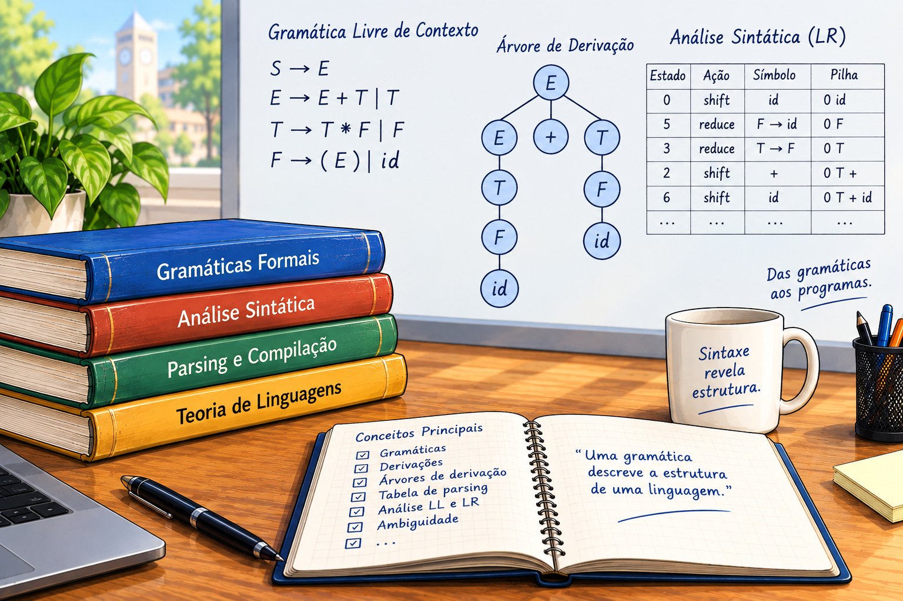
5.1 Linguagens Livres de Contexto
As linguagens regulares constituem uma classe importante de linguagens formais, mas existem linguagens que não podem ser descritas por meio de expressões regulares ou reconhecidas por autômatos finitos. Um exemplo clássico é a linguagem
\[ L = \{0^n1^n \mid n \geq 0\}, \]
que exige que a quantidade de símbolos 0 seja igual à quantidade de símbolos 1, mantendo ainda a ordem em que esses símbolos aparecem. Esse tipo de dependência não pode ser mantido por um autômato finito.
Para descrever linguagens com estruturas desse tipo, utilizam-se as gramáticas livres de contexto (GLC). As GLCs constituem um formalismo mais poderoso que as gramáticas regulares e são particularmente importantes na especificação da sintaxe das linguagens de programação. Os analisadores sintáticos dos compiladores utilizam gramáticas livres de contexto para descrever e verificar as construções sintáticas de uma linguagem.
As linguagens geradas pelas gramáticas livres de contexto são denominadas linguagens livres de contexto. No modelo de reconhecimento, essas linguagens estão associadas aos autômatos de pilha, uma classe de máquinas que dispõe de uma pilha como memória auxiliar.
Gramáticas Livres de Contexto
Uma gramática consiste em um conjunto de regras, também denominadas produções, utilizadas para gerar as cadeias pertencentes a uma linguagem. Cada produção possui uma variável no lado esquerdo e uma sequência de variáveis e símbolos terminais no lado direito.
Considere, por exemplo, a gramática:
\[ \begin{aligned} A &\rightarrow aAc\\ A &\rightarrow B\\ B &\rightarrow b \end{aligned} \]
Nessa gramática, \(A\) e \(B\) são variáveis, enquanto \(a\), \(b\) e \(c\) são símbolos terminais. A variável \(A\) é a variável inicial ou variável de partida.
A produção
\[ A \rightarrow aAc \]
pode ser utilizada para acrescentar simultaneamente um símbolo a à esquerda e um símbolo c à direita de uma cadeia. A produção \(A \rightarrow B\) permite substituir a variável \(A\) por \(B\), enquanto $B b encerra o processo de geração, produzindo o símbolo terminal b.
Geração de uma cadeia
Uma gramática é utilizada para gerar as cadeias de uma linguagem por meio de sucessivas substituições. Inicialmente, escreve-se a variável inicial. Em seguida, escolhe-se uma variável presente na forma sentencial e uma produção que possa ser aplicada a ela. A variável é então substituída pelo lado direito da produção. Esse processo é repetido até que não existam mais variáveis na forma sentencial.
Para a gramática apresentada anteriormente, podemos gerar a cadeia \(aaabccc\) por meio da sequência:
\[ A \Rightarrow aAc \Rightarrow aaAcc \Rightarrow aaaAccc \Rightarrow aaaBccc \Rightarrow aaabccc. \]
A sequência de substituições utilizada para gerar uma cadeia é denominada derivação. O símbolo \(\Rightarrow\) representa uma etapa de derivação, enquanto \(\Rightarrow^*\) pode ser utilizado para representar zero ou mais etapas de derivação.
Nesse exemplo, cada aplicação da produção \(A \rightarrow aAc\) acrescenta um a no início e um c no final. Depois de realizadas as substituições necessárias, a variável \(A\) é substituída por \(B\), e finalmente \(B\) é substituída por b.
Árvores de derivação
Outra maneira de representar uma derivação é por meio de uma árvore de derivação. A raiz da árvore corresponde à variável inicial. Os filhos de um nó correspondem aos símbolos presentes no lado direito da produção utilizada para expandir a variável representada pelo nó, conforme ilustrado na Figura 5.1.
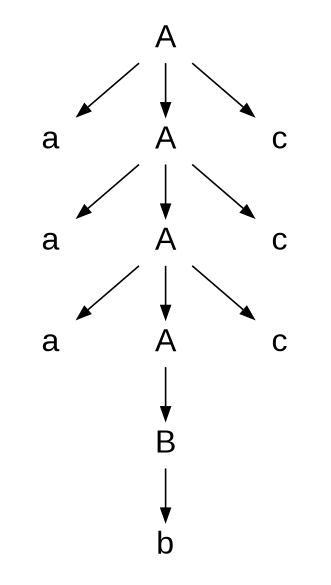
Para a derivação de \(aaabccc\), a árvore de derivação representa graficamente a sequência de aplicações das produções. As folhas da árvore, lidas da esquerda para a direita, formam a cadeia gerada pela gramática.
As árvores de derivação são particularmente importantes na análise sintática de linguagens de programação. Elas permitem representar a estrutura hierárquica de uma sentença e servem de base para diversas etapas posteriores do processamento de um programa.
Definição formal de uma gramática livre de contexto
Definição 5.1 Uma gramática livre de contexto (GLC) é uma 4-upla
\[ G=(V,\Sigma,R,P), \]
em que:
- \(V\) é um conjunto finito de variáveis;
- \(\Sigma\) é um conjunto finito de símbolos terminais, disjunto de \(V\);
- \(R\) é um conjunto de regras de produção;
- \(P \in V\) é o símbolo inicial ou de partida.
Cada produção de uma GLC possui a forma
\[ X \rightarrow w, \]
em que \(X \in V\) e \(w \in (V\cup\Sigma)^*\).
A característica fundamental de uma gramática livre de contexto é que o lado esquerdo de cada produção contém exatamente uma variável. A substituição dessa variável pode ser realizada independentemente do contexto em que ela aparece.
A linguagem gerada por uma gramática \(G\) é definida por
\[ L(G)=\{w\in\Sigma^* \mid P\overset{*}{\Rightarrow}w\}. \]
Portanto, uma cadeia pertence à linguagem da gramática quando pode ser derivada a partir do símbolo inicial e, após um número finito de aplicações das produções, resultar em uma cadeia formada exclusivamente por símbolos terminais.
Aplicação das GLCs às linguagens de programação
As gramáticas livres de contexto são amplamente utilizadas para especificar, por meio de definições indutivas, as construções sintáticas válidas de linguagens de programação. Em um compilador, a gramática pode ser utilizada pelo analisador sintático para determinar se a sequência de tokens produzida pelo analisador léxico possui uma estrutura sintática válida.
Considere a gramática
\[ G=(\{C,E,I,O\},\{a,b,+,*,(,),:=,;\},R,C), \]
em que o conjunto de produções é:
\[ \begin{aligned} C &\rightarrow I:=E \mid C;C\\ E &\rightarrow I \mid EOE \mid (E)\\ O &\rightarrow + \mid *\\ I &\rightarrow a \mid b. \end{aligned} \]
A variável \(C\) representa construções de comandos, \(E\) representa expressões, \(O\) representa operadores e \(I\) representa identificadores. Essa organização permite descrever estruturas sintáticas compostas a partir de estruturas menores.
Por exemplo, a produção
\[ E\rightarrow EOE \]
permite construir uma expressão combinando duas expressões por meio de um operador. Já a produção
\[ E\rightarrow(E) \]
permite representar uma expressão delimitada por parênteses.
Essa característica recursiva das GLCs é fundamental para representar estruturas hierárquicas presentes nas linguagens de programação, como expressões aritméticas, comandos condicionais, chamadas de funções e blocos de comandos.
Outro exemplo de gramática livre de contexto
Considere a gramática
\[ G_3=(\{S\},\{a,b\},R,S), \]
com as produções
\[ \begin{aligned} S &\rightarrow aSb\\ S &\rightarrow SS\\ S &\rightarrow \varepsilon. \end{aligned} \]
Essa gramática permite gerar cadeias como
\[ abab,\qquad aaabbb,\qquad aababb. \]
A produção \(S\rightarrow aSb\) permite inserir um símbolo a no início e um símbolo b no final de uma estrutura. A produção \(S\rightarrow SS\) permite concatenar duas estruturas já geradas, enquanto \(S\rightarrow\varepsilon\) fornece o caso básico da derivação.
Se interpretarmos a como um parêntese esquerdo e b como um parêntese direito, essa gramática está relacionada à linguagem de parênteses corretamente aninhados. Esse exemplo evidencia a capacidade das GLCs de representar estruturas recursivas e aninhadas.
Projeto de gramáticas livres de contexto
A construção de uma GLC para uma determinada linguagem exige a identificação das estruturas que caracterizam as cadeias dessa linguagem. Assim como ocorre no projeto de autômatos finitos, não existe uma única estratégia que possa ser aplicada indistintamente a todos os problemas.
Uma estratégia útil consiste em decompor uma linguagem em linguagens livres de contexto mais simples. Considere, por exemplo,
\[ L=\{0^n1^n\mid n\geq0\} \cup \{1^n0^n\mid n\geq0\}. \]
Podemos construir uma gramática para cada uma das partes:
\[ S_1\rightarrow0S_11\mid\varepsilon \]
e
\[ S_2\rightarrow1S_20\mid\varepsilon. \]
Em seguida, uma variável inicial pode escolher entre as duas possibilidades:
\[ S\rightarrow S_1\mid S_2. \]
Outra estratégia importante é construir uma GLC a partir de um autômato finito quando a linguagem é regular. Dado um AFD com estados \(q_0,q_1,\ldots,q_n\), pode-se associar uma variável \(R_i\) a cada estado \(q_i\).
Para uma transição
\[ \delta(q_i,a)=q_j, \]
adiciona-se uma produção da forma
\[ R_i\rightarrow aR_j. \]
Para cada estado de aceitação \(q_i\), adiciona-se também
\[ R_i\rightarrow\varepsilon. \]
A variável correspondente ao estado inicial do AFD é escolhida como variável inicial da gramática.
Outra técnica útil para linguagens com dependências entre símbolos consiste em utilizar produções da forma
\[ R\rightarrow uRv, \]
nas quais os símbolos acrescentados à esquerda e à direita estão relacionados. Essa construção é especialmente útil para linguagens que exigem correspondência entre partes da cadeia, como \(0^n1^n\).
Ambiguidade
Uma GLC é denominada ambígua quando existe pelo menos uma sentença da linguagem que possui mais de uma árvore de derivação distinta.
Considere a gramática:
\[ E\rightarrow E+E\mid E*E\mid(E)\mid t. \]
Para a cadeia
\[ t+t+t, \]
podem existir diferentes formas de agrupar as operações, conforme ilustrado na Figura 5.2.
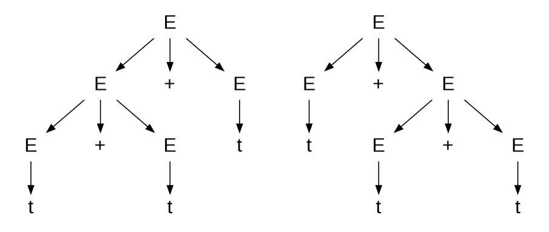
Uma interpretação pode associar primeiro os dois primeiros operandos:
\[ (t+t)+t, \]
enquanto outra pode associar os dois últimos:
\[ t+(t+t). \]
Essas diferentes estruturas podem ser representadas por árvores de derivação distintas. A existência de mais de uma árvore para a mesma sentença caracteriza a ambiguidade da gramática.
A ambiguidade é especialmente importante no projeto de linguagens de programação, pois uma sentença ambígua pode admitir mais de uma interpretação sintática. Em uma linguagem de programação, normalmente é necessário estabelecer regras que determinem de forma única a estrutura da expressão, como regras de precedência e associatividade dos operadores.
Forma Normal de Chomsky
Quando se trabalha com gramáticas livres de contexto, pode ser conveniente transformar a gramática para uma forma simplificada. Uma dessas formas é a Forma Normal de Chomsky (FNC).
Uma GLC está na Forma Normal de Chomsky quando suas produções possuem as formas
\[ A\rightarrow BC \]
ou
\[ A\rightarrow a, \]
em que \(A\), \(B\) e \(C\) são variáveis e \(a\) é um símbolo terminal.
Também é permitida a produção
\[ S\rightarrow\varepsilon \]
quando \(S\) é o símbolo inicial.
A principal característica da FNC é restringir a estrutura das produções, permitindo que uma variável produza exatamente duas variáveis ou um único terminal. Essa estrutura simplificada é particularmente conveniente para determinados algoritmos de análise sintática, entre eles o algoritmo CYK.
Um resultado importante estabelece que toda gramática livre de contexto pode ser transformada em uma gramática equivalente na Forma Normal de Chomsky, considerando as condições apropriadas para a cadeia vazia.
Transformação para a Forma Normal de Chomsky
A transformação de uma GLC para a FNC pode ser realizada por uma sequência de etapas. Inicialmente, introduz-se uma nova variável inicial \(S_0\) e uma produção
\[ S_0\rightarrow S, \]
em que \(S\) era o símbolo inicial original. Essa modificação garante que o novo símbolo inicial não apareça no lado direito de nenhuma produção.
Em seguida, são removidas as produções \(\varepsilon\). Se uma variável \(A\) pode produzir \(\varepsilon\), então, para uma produção que contenha \(A\), devem ser acrescentadas produções correspondentes às possibilidades de presença ou ausência de \(A\).
Por exemplo, se existir
\[ R\rightarrow uAv \]
e \(A\) for anulável, pode-se acrescentar
\[ R\rightarrow uv. \]
Quando uma produção contém várias ocorrências de uma variável anulável, devem ser consideradas as diferentes combinações possíveis de remoção dessas ocorrências.
Depois da eliminação das produções \(\varepsilon\), removem-se as produções unitárias, isto é, produções da forma
\[ A\rightarrow B. \]
Quando \(B\) possui uma produção \(B\rightarrow u\), a produção correspondente pode ser transferida para \(A\).
Finalmente, as produções restantes são convertidas para as formas permitidas pela FNC. Produções com mais de duas variáveis no lado direito são decompostas por meio da introdução de novas variáveis.
Por exemplo, uma produção
\[ A\rightarrow u_1u_2u_3\ldots u_k \]
pode ser substituída por uma sequência de produções binárias utilizando novas variáveis:
\[ \begin{aligned} A&\rightarrow u_1A_1\\ A_1&\rightarrow u_2A_2\\ &\ \vdots\\ A_{k-2}&\rightarrow u_{k-1}u_k. \end{aligned} \]
Quando uma produção de tamanho dois contém terminais, esses terminais podem ser substituídos por novas variáveis. Por exemplo, para uma produção contendo \(a\) como um dos símbolos, pode-se introduzir uma variável \(U\) e a produção
\[ U\rightarrow a. \]
Dessa maneira, as produções passam gradualmente a obedecer às restrições da Forma Normal de Chomsky.
Algoritmo CYK
O algoritmo de Cocke-Younger-Kasami (CYK) é um algoritmo de análise sintática para linguagens livres de contexto. O algoritmo utiliza uma estratégia de análise de baixo para cima associada à programação dinâmica.
A versão padrão do CYK opera sobre gramáticas que estão na Forma Normal de Chomsky. Como toda GLC pode ser transformada para essa forma, o algoritmo pode ser aplicado, após a transformação apropriada, a uma ampla classe de linguagens livres de contexto.
Considere uma cadeia de entrada
\[ I=a_1a_2\ldots a_n \]
e uma gramática em FNC com \(r\) variáveis. O algoritmo mantém informações sobre quais variáveis podem gerar cada substring da cadeia.
Uma forma de representar essas informações é por meio de uma estrutura tridimensional
\[ P[n,n,r], \]
cujos elementos são valores booleanos. Um elemento \(P[l,s,A]\) indica se a variável \(A\) pode gerar uma substring de comprimento \(l\) iniciada na posição \(s\) da entrada.
Inicialmente, são identificadas as produções que geram diretamente cada terminal. Para cada posição \(s\) da entrada e cada produção
\[ R_v\rightarrow a_s, \]
marca-se:
\[ P[1,s,v]=\text{verdadeiro}. \]
Em seguida, são analisadas substrings de comprimento crescente. Para uma substring de comprimento \(l\), consideram-se todas as possíveis posições iniciais e todas as possíveis divisões da substring em duas partes.
Suponha que exista uma produção
\[ R_a\rightarrow R_bR_c. \]
Se uma substring puder ser dividida em duas partes de modo que \(R_b\) gere a primeira parte e \(R_c\) gere a segunda, então \(R_a\) também pode gerar a substring completa.
Formalmente, para uma divisão na posição \(p\), verifica-se:
\[ P[p,s,b]\land P[l-p,s+p,c]. \]
Quando essa condição é verdadeira, define-se:
\[ P[l,s,a]=\text{verdadeiro}. \]
Além da tabela \(P\), pode-se manter uma estrutura de backpointers, denominada back, contendo informações sobre as divisões utilizadas para gerar cada substring. Essas informações permitem reconstruir posteriormente as árvores de derivação possíveis.
Ao final da execução, verifica-se a posição correspondente à cadeia completa e à variável inicial. Se
\[ P[n,1,1] \]
for verdadeiro, a cadeia pertence à linguagem gerada pela gramática. Caso contrário, a cadeia não pertence à linguagem.
O algoritmo CYK possui complexidade
\[ O(n^3|G|), \]
em que \(n\) é o tamanho da cadeia de entrada e \(|G|\) representa o tamanho da gramática. A utilização de programação dinâmica evita a repetição de cálculos para as mesmas substrings e permite obter um procedimento sistemático para a análise de cadeias geradas por GLCs em Forma Normal de Chomsky.
O exemplo interativo seguinte simula esse algoritmo. A partir de um gramática na Forma Normal de Chomsky e um sentença o simulador preenche a tabela dinâmica de controi todas as árvores de derivação para a sentença dada, se esta for reconhecida pela linguagem reconhecida pela gramática FNC.
Eliminação da Recursão à Esquerda
A recursão à esquerda é uma característica importante das gramáticas livres de contexto, especialmente quando essas gramáticas são utilizadas na construção de analisadores sintáticos descendentes. Uma gramática apresenta recursão à esquerda quando existe uma variável que pode derivar uma cadeia cujo primeiro símbolo é a própria variável. No caso mais simples, isso ocorre quando uma produção apresenta a forma
\[ X \rightarrow X\alpha. \]
A recursão à esquerda pode ser direta, quando aparece explicitamente em uma produção, ou indireta, quando é introduzida por uma sequência de derivações envolvendo outras variáveis. Embora a recursão à esquerda não seja um problema para todos os métodos de análise sintática, ela impede a aplicação direta de determinados analisadores descendentes, pois o analisador pode entrar em um processo infinito de expansão de uma mesma variável sem consumir nenhum símbolo da entrada.
Para uma gramática que contém produções da forma
\[ X \rightarrow Xy_1 \mid Xy_2 \mid \cdots \mid Xy_n \mid w_1 \mid w_2 \mid \cdots \mid w_k, \]
em que os símbolos \(w_i\) não iniciam com \(X\), a recursão à esquerda pode ser eliminada por meio da introdução de uma nova variável \(Z\). As produções podem ser substituídas por
\[ X \rightarrow w_1Z \mid w_2Z \mid \cdots \mid w_kZ \]
e
\[ Z \rightarrow y_1Z \mid y_2Z \mid \cdots \mid y_nZ \mid \lambda. \]
A transformação preserva a linguagem gerada pela gramática, mas substitui a recursão à esquerda por uma forma de recursão à direita.
Considere, por exemplo, a gramática
\[ E \rightarrow E+E \mid E*E \mid (E) \mid t. \]
As duas primeiras produções apresentam recursão à esquerda. Uma transformação possível, conforme o procedimento apresentado anteriormente, produz a gramática
\[ E \rightarrow (E)Z \mid tZ \]
e
\[ Z \rightarrow +EZ \mid *EZ \mid \lambda. \]
A nova gramática não apresenta a recursão à esquerda direta existente na gramática original. Essa transformação é particularmente importante para a construção de analisadores sintáticos descendentes, nos quais a eliminação da recursão à esquerda constitui uma etapa de preparação da gramática.
É importante observar que a eliminação da recursão à esquerda não resolve, por si só, todos os problemas necessários para a construção de um analisador descendente. Dependendo do método utilizado, outras transformações podem ser necessárias, como a fatoração à esquerda, além da análise dos conjuntos FIRST e FOLLOW. Esses conceitos serão utilizados posteriormente na construção de analisadores LL(1).
Autômato com Pilha
As gramáticas livres de contexto podem ser utilizadas para descrever estruturas que não podem ser reconhecidas por autômatos finitos. Um exemplo clássico é a linguagem
\[ L=\{0^n1^n\mid n\geq 0\}, \]
na qual a quantidade de símbolos \(0\) deve ser igual à quantidade de símbolos \(1\). Um autômato finito não possui memória suficiente para armazenar uma quantidade arbitrária de símbolos e posteriormente compará-la com a quantidade de símbolos de outro tipo.
Uma estrutura computacional capaz de realizar esse tipo de reconhecimento é o autômato com pilha (AP). O autômato com pilha pode ser entendido como uma extensão de um autômato finito não determinístico à qual é acrescentada uma estrutura de memória denominada pilha. Os símbolos podem ser colocados na pilha durante o processamento da entrada e posteriormente retirados para verificar relações entre diferentes partes da cadeia.
A pilha funciona segundo o princípio LIFO (Last In, First Out), isto é, o último símbolo inserido é o primeiro a ser retirado. Essa característica permite que o autômato armazene informações sobre uma parte da entrada e utilize essas informações posteriormente.
Durante uma transição, o autômato pode ler um símbolo da entrada, consultar o símbolo que está no topo da pilha e realizar operações sobre essa pilha. Dependendo da transição, um símbolo pode ser empilhado, desempilhado ou nenhuma dessas operações pode ser realizada.
Os autômatos com pilha possuem poder computacional equivalente às gramáticas livres de contexto no que diz respeito às linguagens que podem ser reconhecidas. Entretanto, existe uma diferença importante entre autômatos com pilha determinísticos e não determinísticos. Diferentemente do que ocorre com os autômatos finitos, os autômatos com pilha determinísticos não possuem o mesmo poder de reconhecimento que os autômatos com pilha não determinísticos.
Definição formal de um autômato com pilha
Definição 5.2 Um autômato com pilha pode ser definido formalmente pela 6-upla
\[ A=(Q,\Sigma,\Gamma,\delta,q_0,F), \]
em que:
- \(Q\) é o conjunto finito de estados;
- \(\Sigma\) é o alfabeto de entrada;
- \(\Gamma\) é o alfabeto da pilha;
- \(\delta\) é a função de transição;
- \(q_0\in Q\) é o estado inicial;
- \(F\subseteq Q\) é o conjunto de estados de aceitação.
A função de transição é definida por
\[ \delta: Q\times\Sigma_\varepsilon\times\Gamma_\varepsilon \rightarrow \mathcal{P}(Q\times\Gamma_\varepsilon). \]
O uso de \(\Sigma_\varepsilon\) permite que uma transição seja realizada consumindo ou não um símbolo da entrada. Analogamente, \(\Gamma_\varepsilon\) permite representar situações em que não há símbolo da pilha sendo consultado ou inserido.
A presença da pilha acrescenta ao modelo de autômato finito uma forma de memória potencialmente ilimitada. Embora o conjunto de símbolos disponíveis na pilha seja finito, a quantidade de símbolos armazenados pode crescer durante a computação. Essa característica é fundamental para o reconhecimento de diversas linguagens livres de contexto.
Exemplo de Autômato com Pilha
Considere novamente a linguagem
\[ L=\{0^n1^n\mid n\geq0\}. \]
Um autômato com pilha pode reconhecer essa linguagem armazenando na pilha um símbolo para cada \(0\) encontrado na entrada. Quando começam a ser encontrados os símbolos \(1\), o autômato retira um símbolo da pilha para cada \(1\) lido, representado na Figura 5.3.
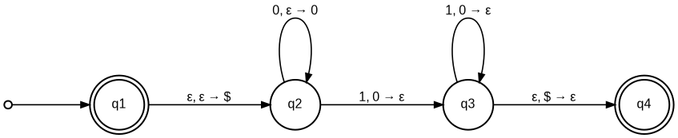
Inicialmente, a máquina coloca um marcador na pilha para indicar sua base. Ao processar os símbolos \(0\), um novo símbolo \(0\) é empilhado para cada símbolo lido. Assim, depois de processar \(0^n\), a pilha contém \(n\) símbolos \(0\), além do marcador de fundo.
Quando o primeiro \(1\) é encontrado, o autômato passa para uma fase diferente do processamento. Para cada \(1\) lido, um símbolo \(0\) é retirado da pilha. Se a cadeia tiver exatamente a mesma quantidade de \(0\) e \(1\), a leitura da entrada terminará juntamente com o esvaziamento da parte relevante da pilha.
Essa estratégia permite realizar uma comparação entre duas quantidades arbitrariamente grandes sem que o autômato precise armazenar explicitamente o valor de \(n\). A pilha desempenha justamente o papel dessa memória.
No diagrama de um autômato com pilha, as transições são normalmente representadas por três componentes. Uma notação possível é
\[ a,b;c, \]
ou, de forma equivalente,
\[ a,b\rightarrow c. \]
Essa notação significa que o autômato lê \(a\) da entrada, verifica \(b\) no topo da pilha e substitui \(b\) por \(c\). Os símbolos podem ser \(\varepsilon\), permitindo representar diferentes tipos de transição.
Quando \(a=\varepsilon\), a transição é realizada sem consumir um símbolo da entrada. Quando \(b=\varepsilon\), não é necessário retirar um símbolo da pilha para realizar a transição. Finalmente, quando \(c=\varepsilon\), nenhum símbolo é colocado na pilha após a operação.
Essa notação torna possível representar, em um único diagrama, tanto a leitura da entrada quanto as operações realizadas sobre a memória auxiliar do autômato.
O autômato de pilha da Figura 5.3 pode ser formalmente definido como:
Seja \(M_1 = (Q, \Sigma, \Gamma, \delta, q_1, F)\) e
\[ L(M_1) = \{0^n1^n \mid n \geq 0\}. \]
Os componentes de \(M_1\) são:
- \(Q = \{q_1, q_2, q_3, q_4\}\);
- \(\Sigma = \{0, 1\}\);
- \(\Gamma = \{0, \$\}\);
- \(F = \{q_1, q_4\}\); e
- \(\delta\) é dada pela tabela a seguir:
| Entrada | 0 | 1 | \(\varepsilon\) | ||||||
|---|---|---|---|---|---|---|---|---|---|
| Pilha | \(0\) | \(\$\) | \(\varepsilon\) | \(0\) | \(\$\) | \(\varepsilon\) | \(0\) | \(\$\) | \(\varepsilon\) |
| \(q_1\) | \(\{(q_2,\$)\}\) | ||||||||
| \(q_2\) | \(\{(q_2,0)\}\) | \(\{(q_3,\varepsilon)\}\) | |||||||
| \(q_3\) | \(\{(q_3,\varepsilon)\}\) | \(\{(q_4,\varepsilon)\}\) | |||||||
| \(q_4\) |
Outros exemplos de autômatos com pilha
A capacidade adicional fornecida pela pilha permite reconhecer outras linguagens que não podem ser reconhecidas por autômatos finitos.
Um exemplo apresentado representado na Figura 5.4
\[ L(M_2)= \{a^ib^jc^k\mid i,j,k\geq0 \text{ e } i=j \text{ ou } i=k\}. \]
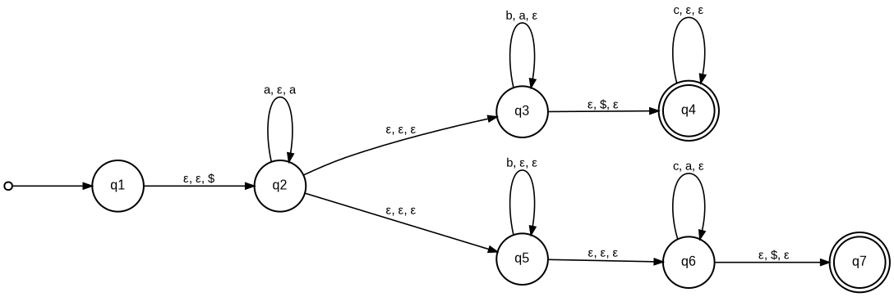
Nesse caso, o autômato precisa verificar uma de duas condições possíveis: a quantidade de símbolos \(a\) deve ser igual à quantidade de símbolos \(b\), ou a quantidade de símbolos \(a\) deve ser igual à quantidade de símbolos \(c\).
O não determinismo é essencial nessa construção. O autômato pode, de forma não determinística, escolher qual das duas condições tentará verificar. Essa possibilidade ilustra uma diferença importante entre autômatos com pilha determinísticos e não determinísticos.
Outro exemplo é a linguagem seguinte, ilustrada na Figura 5.5
\[ L(M_3)=\{ww^R\mid w\in\{0,1\}^*\}, \]
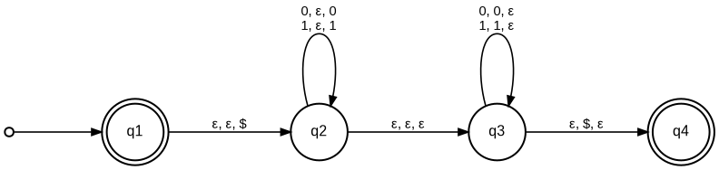
formada pelas cadeias obtidas pela concatenação de uma cadeia \(w\) com sua reversa \(w^R\). O reconhecimento dessa linguagem também exige que o autômato armazene informações sobre a primeira parte da entrada para compará-las posteriormente com a segunda parte.
Equivalência entre Gramáticas Livres de Contexto e Autômatos com Pilha
Existe uma relação fundamental entre gramáticas livres de contexto e autômatos com pilha. O resultado pode ser expresso pelo seguinte teorema:
Teorema 5.1 Uma linguagem é livre de contexto se, e somente se, algum autômato com pilha a reconhece.
Esse resultado estabelece uma equivalência entre duas formas diferentes de representar uma mesma classe de linguagens. Uma linguagem livre de contexto pode ser descrita por meio de uma gramática, que especifica como suas cadeias podem ser geradas, ou por meio de um autômato com pilha, que especifica como suas cadeias podem ser reconhecidas.
A equivalência não significa que uma gramática e um autômato com pilha tenham a mesma estrutura. Na gramática, o processo é descrito por meio de produções e derivações. No autômato, o processamento é descrito por estados, transições e operações sobre a pilha.
Podemos, portanto, considerar duas direções de transformação:
\[ \text{GLC}\longrightarrow\text{AP} \]
e
\[ \text{AP}\longrightarrow\text{GLC}. \]
Essas transformações mostram que os dois formalismos possuem exatamente o mesmo poder de representação para a classe das linguagens livres de contexto.
Construção de um autômato com pilha a partir de uma GLC
Considere a gramática
\[ \begin{aligned} S &\rightarrow aXb\mid c,\\ X &\rightarrow aX\mid\varepsilon. \end{aligned} \]
A construção de um autômato com pilha a partir de uma GLC pode ser feita de forma que a pilha contenha uma representação da derivação que ainda precisa ser processada.
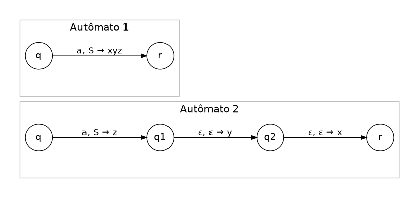
Inicialmente, o símbolo inicial da gramática é colocado na pilha. O autômato utiliza as produções da gramática para substituir uma variável pelo lado direito de uma produção. Esse processo pode ser realizado por transições que não consomem símbolos da entrada, conforme ilustrado na transformacão do autômato 1 para o autômato 2 na Figura 5.6.
Quando o topo da pilha é um terminal, o autômato compara esse terminal com o próximo símbolo da entrada. Se forem iguais, o símbolo é consumido e retirado da pilha. Dessa maneira, a pilha mantém uma representação da parte da derivação que ainda precisa ser reconhecida.
O procedimento estabelece uma correspondência entre uma derivação da gramática e uma computação do autômato. A aceitação ocorre quando toda a entrada foi consumida e a representação da derivação foi processada.
A conversão da gramática livre de contexto para o autômatro de pilha correspondente está representado na Figura 5.7.
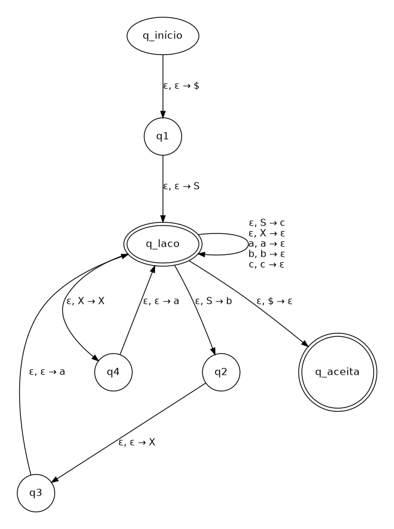
No nó laço estão representadas todas as regras da gramática:
- No laço de q_laço para q_laço estão o empilhamento dos terminais, por exemplo, \(a, a \rightarrow \varepsilon\) que significa que quando o autômato de pilha lê o símbolo \(a\) ele empilha o símbolo \(a\) e não desempilha nada (\(\varepsilon\)). Nesta transição estão as regras unitária também, como \(S \rightarrow c\), representado como operação de pilha \(\varepsilon, S \rightarrow c\).
- Nas transições q_laço \(\rightarrow\) q4 \(\rightarrow\) q_laço, estão as operações de pilha correspondentes a regra \(X \rightarrow aX\).
- E nas transições q_laço \(\rightarrow\) q2 \(\rightarrow\) q3 \(\rightarrow\) q_laço, estão as operações de pilha correspondentes a regra \(S \rightarrow aXb\).
Construção de uma GLC a partir de um autômato com pilha
A transformação inversa também é possível. Considere um autômato com pilha
\[ P=(Q,\Sigma,\Gamma,\delta,q_0,\{q_{\mathrm{aceita}}\}). \]
Pode-se construir uma gramática
\[ G=(V,\Sigma,R,P) \]
na qual as variáveis representam computações do autômato entre pares de estados.
Para cada par de estados \(p,q\in Q\), é criada uma variável
\[ A_{pq}. \]
Intuitivamente, \(A_{pq}\) representa uma cadeia de entrada que permite ao autômato sair do estado \(p\) e chegar ao estado \(q\), obedecendo às operações necessárias sobre a pilha.
O símbolo inicial da gramática é definido por
\[ A_{q_0,q_{\mathrm{aceita}}}. \]
As regras de produção são construídas a partir das transições do autômato. Entre elas encontram-se regras da forma
\[ A_{pq}\rightarrow aA_{rs}b, \]
regras que dividem uma computação em duas partes,
\[ A_{pq}\rightarrow A_{pr}A_{rq}, \]
e regras que representam uma computação que começa e termina no mesmo estado,
\[ A_{pp}\rightarrow\varepsilon. \]
Essa construção é mais complexa do que a transformação de uma GLC para um autômato com pilha, mas demonstra formalmente a equivalência entre os dois modelos.
Linguagens que não são Livres de Contexto
As gramáticas livres de contexto são bastante expressivas, mas não conseguem representar todas as linguagens formais. Portanto, assim como foi possível identificar linguagens que não são regulares, também é possível identificar linguagens que não são livres de contexto.
Um exemplo clássico é
\[ L=\{a^ib^ic^i\mid i>0\}. \]
Para pertencer a essa linguagem, uma cadeia deve possuir a mesma quantidade de símbolos \(a\), \(b\) e \(c\), nessa ordem. Uma única pilha não é suficiente para realizar esse tipo de comparação simultânea entre três quantidades independentes.
Para demonstrar formalmente que uma linguagem não é livre de contexto, uma das ferramentas utilizadas é o lema do bombeamento para linguagens livres de contexto.
Lema do Bombeamento para Linguagens Livres de Contexto
O lema do bombeamento fornece uma propriedade que toda linguagem livre de contexto deve satisfazer. Se \(A\) é uma linguagem livre de contexto, então existe um número inteiro \(p\), chamado comprimento de bombeamento, tal que toda cadeia \(s\in A\), com comprimento suficientemente grande, pode ser dividida em cinco partes:
\[ s=uvxyz, \]
de modo que sejam satisfeitas as seguintes condições:
\[ |vy|>0, \]
\[ |vxy|\leq p, \]
e, para todo \(i\geq0\),
\[ uv^ixy^iz\in A. \]
A primeira condição garante que pelo menos uma das partes \(v\) ou \(y\) seja não vazia. A segunda estabelece que as partes \(v\), \(x\) e \(y\) estão contidas em uma região da cadeia cujo comprimento não ultrapassa \(p\). A terceira é a propriedade de bombeamento propriamente dita: as partes \(v\) e \(y\) podem ser repetidas simultaneamente qualquer número de vezes sem que a cadeia deixe de pertencer à linguagem.
O lema é normalmente utilizado para provar que uma linguagem não é livre de contexto. Para isso, supõe-se inicialmente que a linguagem seja livre de contexto. A partir dessa hipótese, utiliza-se o comprimento de bombeamento garantido pelo lema e escolhe-se cuidadosamente uma cadeia pertencente à linguagem. Em seguida, demonstra-se que qualquer decomposição possível da cadeia viola uma das propriedades exigidas pelo lema.
É importante observar que o lema do bombeamento fornece uma condição necessária, mas não suficiente, para uma linguagem ser livre de contexto. Portanto, se uma linguagem não satisfaz o lema, podemos concluir que ela não é livre de contexto. Por outro lado, satisfazer o lema não constitui, isoladamente, uma prova de que a linguagem seja livre de contexto.
Exemplo de Linguagem que não é Livre de Contexto
Considere novamente
\[ L=\{a^ib^ic^i\mid i>0\}. \]
Suponha, por contradição, que \(L\) seja uma linguagem livre de contexto. Pelo lema do bombeamento, existe um comprimento de bombeamento \(p\). Escolhemos então a cadeia
\[ s=a^pb^pc^p. \]
Claramente,
\[ s\in L. \]
Pelo lema, essa cadeia pode ser dividida como
\[ s=uvxyz, \]
satisfazendo
\[ |vxy|\leq p. \]
A escolha da cadeia é importante porque existem três blocos consecutivos, cada um com comprimento \(p\):
\[ \underbrace{aa\cdots a}_{p} \underbrace{bb\cdots b}_{p} \underbrace{cc\cdots c}_{p}. \]
Como \(vxy\) possui comprimento no máximo \(p\), essa região não pode abranger simultaneamente partes dos três blocos. Portanto, \(vxy\) está contido em um único bloco ou atravessa apenas uma das fronteiras entre dois blocos.
Consequentemente, existem casos em que \(vxy\) possui apenas símbolos \(a\), apenas símbolos \(b\) ou apenas símbolos \(c\), e casos em que possui símbolos \(a\) e \(b\), ou símbolos \(b\) e \(c\). Não é possível que contenha simultaneamente os três tipos de símbolos.
As possibilidades relevantes são, portanto,
\[ vxy=a^j, \]
\[ vxy=a^jb^k, \]
\[ vxy=b^j, \]
\[ vxy=b^jc^k, \]
ou
\[ vxy=c^j. \]
Ao bombear, por exemplo, com \(i=2\), obtemos
\[ uv^2xy^2z. \]
Nessa nova cadeia, a quantidade de símbolos modificada em pelo menos um dos blocos não é acompanhada por uma modificação equivalente nos demais blocos. Consequentemente, a cadeia resultante deixa de possuir a forma
\[ a^ib^ic^i. \]
Isso contradiz a primeira condição do lema do bombeamento, segundo a qual a cadeia bombeada deveria continuar pertencendo à linguagem para todo \(i\geq0\).
Portanto, a hipótese inicial é falsa e concluímos que
\[ \boxed{\{a^ib^ic^i\mid i>0\}\text{ não é uma linguagem livre de contexto}.} \]
Esse exemplo evidencia uma limitação fundamental das linguagens livres de contexto: embora sejam capazes de representar relações de dependência importantes, como o balanceamento de parênteses ou a correspondência entre duas quantidades, existem relações entre três ou mais componentes que não podem ser reconhecidas por um único mecanismo de pilha.
5.2 Análise Sintática
A análise sintática constitui uma das principais etapas da fase de análise de um compilador. Ela é realizada pelo analisador sintático, também denominado parser, que recebe como entrada a sequência de tokens produzida pelo analisador léxico e verifica se essa sequência está de acordo com as regras sintáticas da linguagem de programação.
Enquanto o analisador léxico identifica os elementos básicos do programa, como identificadores, palavras reservadas, operadores, números e delimitadores, o analisador sintático trabalha com esses elementos para determinar como eles estão relacionados entre si. Seu objetivo é reconhecer estruturas maiores, como expressões, comandos, declarações, blocos e programas completos.
Por exemplo, considere uma expressão como:
\[ a+b*c. \]
O analisador léxico pode produzir uma sequência de tokens correspondente a:
\[ \text{IDENT}(a),\quad +,\quad \text{IDENT}(b),\quad *,\quad \text{IDENT}(c). \]
A análise sintática deve determinar como esses tokens podem ser agrupados de acordo com a gramática da linguagem. Nesse caso, uma gramática que estabeleça a precedência da multiplicação sobre a adição poderá determinar que a expressão seja estruturada como
\[ a+(b*c). \]
Dessa forma, a análise sintática não se limita a verificar se os tokens aparecem em uma determinada ordem. Ela também determina a estrutura hierárquica da sentença.
Estrutura sintática
Uma das principais estruturas utilizadas para representar o resultado da análise sintática é a árvore sintática. A árvore representa a aplicação das regras sintáticas da linguagem e organiza hierarquicamente os elementos que compõem o programa.
De maneira geral, os nós internos da árvore representam construções sintáticas da linguagem, enquanto as folhas correspondem aos símbolos terminais ou aos tokens que constituem a sentença de entrada. A raiz representa a estrutura mais abrangente reconhecida pela gramática, normalmente associada ao símbolo inicial.
Considere, por exemplo, uma expressão aritmética. Uma possível árvore sintática para
\[ a+b*c \]
pode representar a estrutura:
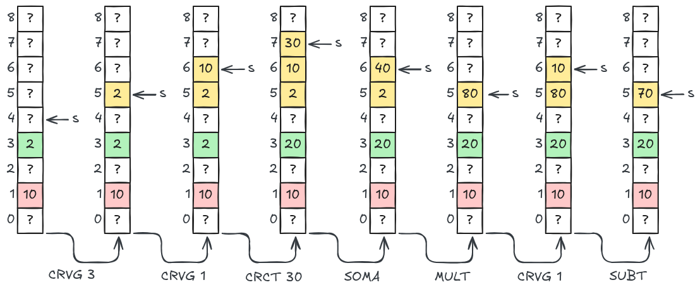
A árvore evidencia que a multiplicação de \(b\) por \(c\) constitui uma subestrutura da expressão e que seu resultado é utilizado como segundo operando da adição.
Essa representação é particularmente importante porque a estrutura sintática pode ser utilizada pelas etapas seguintes do compilador. A partir dela, por exemplo, podem ser realizadas análises semânticas, verificações de tipos e transformações necessárias para a geração de código.
Gramática e reconhecimento sintático
A estrutura sintática de uma linguagem é normalmente especificada por meio de uma gramática livre de contexto (GLC). A gramática define as construções que podem ser formadas e as relações existentes entre elas.
Considere uma gramática simplificada para expressões:
\[ \begin{aligned} E &\rightarrow E+T \mid T\\ T &\rightarrow T*F \mid F\\ F &\rightarrow (E) \mid id. \end{aligned} \]
Nessa gramática, \(E\) representa uma expressão, \(T\) representa um termo e \(F\) representa um fator. As produções estabelecem, entre outras propriedades, a precedência dos operadores + e *.
O analisador sintático utiliza as produções da gramática para verificar se a sequência de tokens recebida pode ser derivada a partir do símbolo inicial. Se for possível realizar uma derivação que produza exatamente a sequência de entrada, a sentença é considerada sintaticamente válida.
Assim, para uma cadeia de entrada \(w\), o problema fundamental da análise sintática pode ser expresso como a determinação de
\[ S\Rightarrow^* w, \]
em que \(S\) é o símbolo inicial da gramática.
Quando a cadeia não pode ser derivada a partir do símbolo inicial, o analisador sintático identifica uma erro sintático. Nesse caso, o compilador normalmente informa a ocorrência do erro e sua localização aproximada no programa-fonte.
Árvore de derivação e árvore sintática
É importante distinguir a árvore de derivação da árvore sintática. A árvore de derivação representa explicitamente a aplicação das produções da gramática. Ela contém, portanto, os elementos intermediários utilizados durante a derivação da sentença.
A árvore sintática, por sua vez, normalmente é uma representação mais compacta da estrutura reconhecida. Elementos que são relevantes para a derivação, mas que não são necessários para representar a estrutura sintática da construção, podem ser eliminados.
Por exemplo, uma árvore de derivação pode conter variáveis como \(E\), \(T\) e \(F\) em diversos níveis, enquanto uma árvore sintática pode representar diretamente a relação entre operadores e operandos.
Essa distinção é importante no desenvolvimento de compiladores porque diferentes analisadores sintáticos podem produzir estruturas intermediárias distintas, mas que representam a mesma estrutura sintática essencial do programa.
Correção sintática
Um programa está sintaticamente correto quando sua sequência de tokens pode ser reconhecida pela gramática da linguagem. Em termos formais, isso significa que existe uma derivação a partir do símbolo inicial da gramática que produz exatamente a sequência de entrada.
Quando se considera uma gramática não ambígua, espera-se que uma sentença válida possua uma única estrutura sintática. Nesse caso, a árvore sintática representa de maneira não ambígua a organização dos elementos da sentença.
A existência de mais de uma árvore de derivação para uma mesma sentença caracteriza uma gramática ambígua. A ambiguidade pode ser problemática em linguagens de programação porque diferentes árvores podem representar diferentes interpretações para uma mesma sequência de tokens. Por esse motivo, as gramáticas utilizadas na especificação de linguagens de programação devem ser projetadas de forma a evitar ambiguidades ou devem ser acompanhadas de regras que permitam determinar univocamente a estrutura pretendida.
Analisador sintático
O analisador sintático recebe a sequência de tokens produzida pelo analisador léxico e procura determinar se ela pertence à linguagem definida pela gramática.
De forma simplificada, seu funcionamento pode ser representado por:
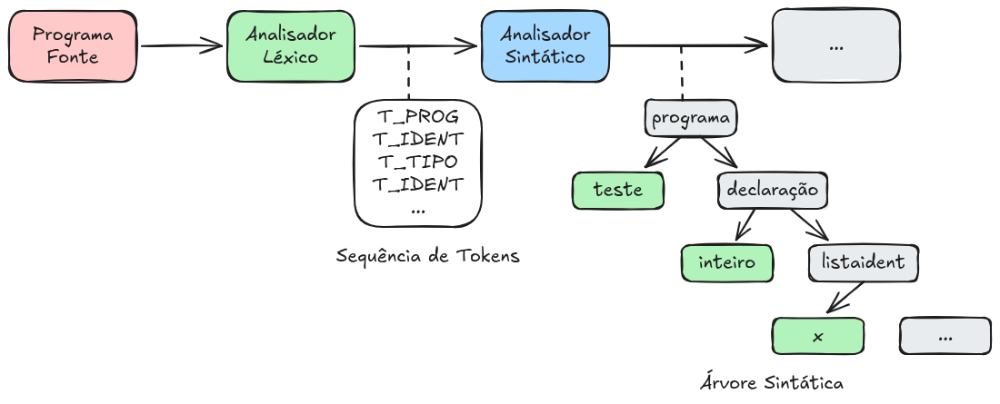
Durante esse processo, o analisador sintático pode construir diretamente uma árvore ou utilizar estruturas auxiliares para posteriormente produzir a árvore correspondente. Em outros casos, a implementação pode produzir uma representação intermediária que será utilizada pelas etapas posteriores do compilador.
Quando a entrada não está de acordo com a gramática, o analisador deve detectar o erro sintático. Além de identificar que a sentença não pertence à linguagem, um analisador sintático de um compilador deve, sempre que possível, fornecer informações úteis para a localização e recuperação do erro.
Análise sintática descendente e ascendente
Existem diferentes estratégias para implementar um analisador sintático. Duas famílias importantes são a análise sintática descendente e a análise sintática ascendente.
Na análise descendente (top-down), a construção da estrutura sintática parte do símbolo inicial da gramática e procura produzir a sequência de tokens da entrada. O processo pode ser interpretado como uma construção da árvore a partir da raiz em direção às folhas.
Uma das técnicas mais conhecidas dessa família é a análise LL, na qual a entrada é examinada da esquerda para a direita e a derivação utilizada é uma derivação mais à esquerda.
Na análise ascendente (bottom-up), o processo ocorre na direção inversa. O analisador parte dos tokens da entrada e procura agrupá-los em estruturas maiores até chegar ao símbolo inicial da gramática. Esse processo pode ser interpretado como uma construção da árvore sintática das folhas em direção à raiz.
Os métodos LR constituem uma importante família de analisadores sintáticos ascendentes. Nesses métodos, a análise é realizada por meio de operações como deslocamento (shift) e redução (reduce).
As técnicas LL e LR serão estudadas posteriormente neste capítulo. Antes disso, é necessário revisar os conceitos fundamentais utilizados na especificação e análise de linguagens, incluindo gramáticas, gramáticas livres de contexto, derivações, reduções, árvores de derivação e árvores sintáticas.
Relação com as demais etapas do compilador
A análise sintática estabelece uma ligação entre a sequência linear de tokens produzida pelo analisador léxico e a estrutura hierárquica necessária para as etapas posteriores do compilador.
O fluxo simplificado pode ser representado da seguinte forma:

A análise léxica identifica os elementos básicos do programa, enquanto a análise sintática determina como esses elementos estão organizados. A partir da estrutura sintática reconhecida, a análise semântica pode verificar propriedades que não são determinadas exclusivamente pela gramática, como compatibilidade de tipos, declaração e uso de identificadores e outras restrições semânticas da linguagem.
Dessa forma, a análise sintática desempenha um papel fundamental na organização do programa para as etapas seguintes da compilação. Uma sequência de tokens deixa de ser apenas uma lista linear de elementos e passa a ser interpretada como uma estrutura hierárquica de acordo com as regras definidas pela linguagem.
Em seguida, serão estudadas as principais estratégias de implementação de analisadores sintáticos, com destaque para os métodos LL e LR.
5.3 Implementação de Analisadores Sintáticos
O objetivo principal da análise sintática é decidir se uma cadeia (sentença, palavra) pertence ou não à linguagem definida por uma gramática. Existem duas importantes estratégias para o problema de análise sintática:
Análise Sintática Ascendente
Análise Sintática Descendente
Na primeira, a árvore sintática é construída partindo-se da cadeia a ser analisada, “subindo-se” até atingir o símbolo inicial da gramática. Na segunda, parte-se do símbolo inicial e vai-se “descendo” até atingir todos os símbolos da cadeia que está sendo analisada.
Apresentamos nessa seção uma estratégia (existem outras) para análise descendente e uma estratégia para análise ascendente.
Análise Sintática LL
Os analisadores descendentes (top-down) podem ser construídos com uma classe de gramática chamada LL(1). O primeiro "L" se refere a forma como é lida a cadeia de entrada na análise, nesse caso da esquerda para direita (Left-to-right). O segundo "L" se refere a forma como é obtida a sequência de derivação para obtenção da sentença avaliada, nesse caso derivação mais à esquerda (leftmost). O número "1" se refere ao número de símbolos a frente deve-se olhar para decidir que regra da gramática deve ser utilizada.
Para construção de Analisadores LL(k), são necessárias duas funções sobre símbolos da gramática: função FIRST e FOLLOW. A Figura 5.9 é usada para ilustrar o cálculo dessas funções. Intuitivamente, todos os símbolos que iniciam derivações de \(A\) compõe o conjunto FIRST de A (por exemplo, o terminal c da Figura). Todo símbolo terminal que segue o símbolo A em qualquer derivação faz parte do conjunto FOLLOW de A (por exemplo, o terminal a da Figura 5.9.
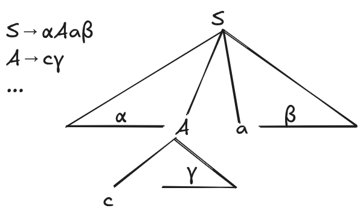
Função \(FIRST\)
A função \(FIRST\) determina quais símbolos terminais podem aparecer como primeiro símbolo de uma cadeia derivada a partir de um determinado símbolo da gramática. Além dos terminais, o conjunto \(FIRST\) pode conter o símbolo \(\lambda\), indicando que o símbolo analisado pode derivar a cadeia vazia. O cálculo deve ser realizado para todos os símbolos da gramática e repetido até que nenhum novo elemento possa ser acrescentado a qualquer conjunto \(FIRST\).
Inicialmente, considere um símbolo \(X\) que seja terminal. Nesse caso, o primeiro símbolo de uma cadeia iniciada por \(X\) é necessariamente o próprio \(X\). Portanto, seu conjunto \(FIRST\) é formado exclusivamente pelo próprio símbolo terminal, isto é, \(FIRST(X)=\{X\}\). Por exemplo, se \(a\) é um terminal da gramática, então \(FIRST(a)=\{a\}\).
Para um símbolo \(X\) que seja não terminal, é necessário analisar cada uma das produções que possuem \(X\) como lado esquerdo. Considere, por exemplo, uma produção da forma \(X\rightarrow Y_1Y_2\ldots Y_k\), em que \(k\geq1\). O primeiro símbolo que pode ser produzido a partir de \(X\) depende inicialmente de \(Y_1\). Assim, todos os terminais pertencentes a \(FIRST(Y_1)\), exceto \(\lambda\), devem ser acrescentados a \(FIRST(X)\).
Entretanto, existe uma situação que exige uma análise adicional. Se \(\lambda\) pertence a \(FIRST(Y_1)\), significa que \(Y_1\) pode desaparecer durante a derivação, produzindo a cadeia vazia. Nesse caso, o primeiro símbolo da cadeia derivada de \(X\) poderá vir de \(Y_2\). Portanto, os elementos de \(FIRST(Y_2)\), exceto \(\lambda\), também devem ser acrescentados a \(FIRST(X)\). Esse processo continua sucessivamente: se \(\lambda\) pertence a \(FIRST(Y_2)\), deve-se considerar \(Y_3\), e assim por diante.
De maneira geral, para uma produção \(X\rightarrow Y_1Y_2\ldots Y_k\), um terminal \(a\) deve ser acrescentado a \(FIRST(X)\) se \(a\) pertence a \(FIRST(Y_i)\) para algum \(i\), desde que todos os símbolos anteriores \(Y_1,\ldots,Y_{i-1}\) possam derivar \(\lambda\). Em outras palavras, para que um símbolo pertencente a \(FIRST(Y_i)\) possa ser o primeiro símbolo derivado de \(X\), todos os símbolos que o precedem na produção precisam ter a possibilidade de desaparecer.
Há ainda um caso especial quando todos os símbolos da produção podem derivar \(\lambda\). Se \(\lambda\) pertence a \(FIRST(Y_j)\) para todo \(j=1,2,\ldots,k\), então toda a sequência \(Y_1Y_2\ldots Y_k\) pode derivar a cadeia vazia. Consequentemente, \(\lambda\) deve ser acrescentado a \(FIRST(X)\). Por exemplo, se \(X\rightarrow ABC\) e \(\lambda\in FIRST(A)\), \(\lambda\in FIRST(B)\) e \(\lambda\in FIRST(C)\), então \(\lambda\in FIRST(X)\).
Finalmente, quando existe diretamente uma produção da forma \(X\rightarrow\lambda\), o símbolo \(X\) pode produzir a cadeia vazia sem a necessidade de realizar qualquer outra derivação. Nesse caso, \(\lambda\) deve ser acrescentado imediatamente ao conjunto \(FIRST(X)\).
O cálculo de \(FIRST\) é, portanto, iterativo. Os conjuntos são inicialmente construídos a partir dos terminais e das produções que permitem derivar \(\lambda\). Em seguida, as produções são examinadas repetidamente para propagar os símbolos terminais e \(\lambda\) entre os conjuntos \(FIRST\). O processo termina quando uma nova passagem por todas as produções não acrescenta nenhum elemento a nenhum conjunto. Nesse momento, diz-se que os conjuntos \(FIRST\) atingiram um ponto fixo, e seus conteúdos representam todos os possíveis primeiros símbolos das cadeias que podem ser derivadas a partir dos símbolos da gramática.
Para calcular \(FIRST\) de todos os simbolos \(X\) de uma gramática, execute as seguintes regras até que nenhum novo símbolo possa ser acrescentado a qualquer conjunto \(FIRST\).
Se \(X\) é um símbolo terminal, então \(FIRST(X) = \{X\}\)
Se \(X\) é um não-terminal e \(X\rightarrow Y_1Y_2...Y_k\) é uma regra de produção para algum \(k \geq 1\), então acrescente \(a\) a \(FIRST(X)\) se, para algum \(i\), \(a\) estiver em \(FIRST(Y_i)\), e \(\lambda\) estiver em todos os \(FIRST(Y_1),...,FIRST(Y_{i-1})\). Se \(\lambda\) está em \(FIRST(Y_j)\) para todo \(j=1,2,...,k\), então adicione \(\lambda\) a \(FIRST(X)\).
Se \(X \rightarrow \lambda\) é um regra de produção, então acrescente \(\lambda\) a \(FIRST(X)\)
Função \(FOLLOW\)
A função \(FOLLOW\) determina quais símbolos podem aparecer imediatamente após um determinado não terminal em uma cadeia derivada da gramática. Diferentemente da função \(FIRST\), que está relacionada aos símbolos que podem iniciar uma derivação, a função \(FOLLOW\) considera os símbolos que podem suceder um não terminal. O cálculo de \(FOLLOW\) é realizado para todos os símbolos não terminais da gramática e utiliza os conjuntos \(FIRST\) previamente calculados.
O primeiro passo consiste em considerar o símbolo inicial da gramática. Seja \(S\) o símbolo inicial. Como uma sentença completa deve ser seguida pelo marcador de fim de sentença, representado por \(\#\), esse símbolo é acrescentado inicialmente ao conjunto \(FOLLOW(S)\). Assim, temos:
\[ \# \in FOLLOW(S) \]
O marcador \(\#\) representa o fim da entrada e é considerado como estando após toda a sentença durante o processo de análise. Portanto, quando o analisador sintático alcançar o final da cadeia de entrada, esse marcador permite identificar que não existem mais símbolos a serem processados.
Considere agora uma produção da forma \(A\rightarrow\alpha B\beta\), na qual \(B\) é um não terminal e \(\beta\) representa a sequência de símbolos que aparece imediatamente após \(B\). Nesse caso, todos os símbolos de \(FIRST(\beta)\), com exceção de \(\lambda\), devem ser acrescentados a \(FOLLOW(B)\). Isso ocorre porque qualquer terminal que possa iniciar uma cadeia derivada de \(\beta\) poderá aparecer imediatamente depois de \(B\) durante uma derivação.
Por exemplo, considere a produção:
\[ A\rightarrow \alpha Bcd \]
Como a sequência que sucede \(B\) começa pelo terminal \(c\), temos \(c\in FIRST(cd)\). Consequentemente, \(c\) deve ser incluído em \(FOLLOW(B)\). O mesmo princípio se aplica quando \(\beta\) é formada por vários símbolos e seu primeiro símbolo pode desaparecer por derivação de \(\lambda\).
Existe ainda uma situação importante quando a sequência \(\beta\) pode derivar \(\lambda\). Considere novamente uma produção da forma \(A\rightarrow\alpha B\beta\). Se \(\lambda\in FIRST(\beta)\), então \(\beta\) pode desaparecer durante a derivação. Nesse caso, os símbolos que podem aparecer depois de \(A\) também podem aparecer imediatamente depois de \(B\). Portanto, todos os elementos de \(FOLLOW(A)\) devem ser acrescentados a \(FOLLOW(B)\).
O mesmo raciocínio se aplica quando \(B\) aparece no final da produção, isto é, em uma produção da forma \(A\rightarrow\alpha B\). Como não existe nenhum símbolo depois de \(B\) nessa produção, tudo aquilo que pode aparecer depois de \(A\) também poderá aparecer depois de \(B\). Assim, os elementos de \(FOLLOW(A)\) devem ser incluídos em \(FOLLOW(B)\).
O cálculo de \(FOLLOW\) é, portanto, um processo iterativo. Inicialmente, coloca-se \(\#\) no conjunto \(FOLLOW\) do símbolo inicial. Em seguida, percorrem-se todas as produções, aplicando as regras de propagação dos símbolos obtidos a partir de \(FIRST\) e dos conjuntos \(FOLLOW\) dos não terminais. Como uma informação obtida em uma produção pode gerar novas informações em outra produção, as regras precisam ser executadas repetidamente.
O processo termina quando uma nova passagem por todas as produções não acrescenta nenhum novo símbolo a nenhum conjunto \(FOLLOW\). Nesse momento, os conjuntos atingiram um ponto fixo e contêm todos os símbolos que podem aparecer imediatamente após cada não terminal em alguma derivação possível da gramática.
A função \(FOLLOW(B)\) determina os símbolos que podem aparecer imediatamente após o não terminal \(B\) em alguma cadeia derivada da gramática.
Para o símbolo inicial \(S\), acrescenta-se inicialmente o marcador de fim de sentença \(\#\):
\[ \#\in FOLLOW(S) \]
Para uma produção \(A\rightarrow\alpha B\beta\), todos os símbolos de \(FIRST(\beta)\), exceto \(\lambda\), são acrescentados a \(FOLLOW(B)\):
\[ FIRST(\beta)-\{\lambda\}\subseteq FOLLOW(B) \]
Se \(\beta\) puder derivar \(\lambda\), ou se \(B\) estiver no final da produção, os símbolos de \(FOLLOW(A)\) também devem ser acrescentados a \(FOLLOW(B)\):
\[ FOLLOW(A)\subseteq FOLLOW(B) \]
As regras são aplicadas repetidamente a todas as produções até que nenhum novo símbolo possa ser acrescentado aos conjuntos. O resultado final corresponde ao ponto fixo dos conjuntos \(FOLLOW\) da gramática.
Para calcular \(FOLLOW\) de todos os simbolos NÃO-TERMINAIS \(S\) de uma gramática, execute as seguintes regras até que nenhum novo símbolo possa ser acrescentado a qualquer conjunto \(FOLLOW\).
Coloque \(\#\) em \(FOLLOW(S)\), onde \(S\) é o símbolo inicial da gramática e \(\#\) é o marcador de fim de sentença, que é incluido antes da avaliação da sentença.
Se houver uma produção \(A \rightarrow \alpha B \beta\), então tudo que está em \(FIRST(\beta)\) exceto \(\lambda\), deve estar em \(FOLLOW(B)\).
Se houver uma produção \(A \rightarrow \alpha B\) ou \(A \rightarrow \alpha B \beta\), onde \(FIRST(\beta)\) contém \(\lambda\), então inclua \(FOLLOW(A)\) em \(FOLLOW(B)\).
Exemplo:
Considere a seguinte gramática:
\(E \rightarrow TE^{'}\)
\(E^{'} \rightarrow +TE^{'} | \lambda\)
\(T \rightarrow FT^{'}\)
\(T^{'} \rightarrow *FT^{'} | \lambda\)
\(F \rightarrow a | (E)\)
Conjuntos FIRST e FOLLOW:
| FIRST | FOLLOW | |
|---|---|---|
| \(E\) | \(\{(, a\}\) | \(\{), \#\}\) |
| \(E'\) | \(\{+, \lambda\}\) | \(\{), \#\}\) |
| \(T\) | \(\{(, a\}\) | \(\{+, ), \#\}\) |
| \(T'\) | \(\{*, \lambda\}\) | \(\{+, ), \#\}\) |
| \(F\) | \(\{(, a\}\) | \(\{*, +, ), \#\}\) |
Tabela de Análise Preditiva LL(1)
A construção da tabela de análise preditiva LL(1) constitui uma etapa fundamental para a implementação de um analisador sintático descendente preditivo. A tabela estabelece, para cada combinação entre um não terminal da gramática e um terminal da entrada, qual produção deve ser utilizada durante a análise. Dessa forma, o analisador pode determinar a produção a ser aplicada sem realizar retrocesso ou testar diferentes alternativas.
A construção da tabela utiliza diretamente as informações obtidas pelos conjuntos \(FIRST\) e \(FOLLOW\) da gramática. O conjunto \(FIRST\) permite identificar quais terminais podem iniciar uma cadeia derivada a partir do lado direito de uma produção. Já o conjunto \(FOLLOW\) é utilizado quando essa cadeia pode derivar a palavra vazia \(\lambda\), indicando que a produção pode ser escolhida com base no símbolo que aparece imediatamente após o não terminal analisado.
Considere uma produção \(A\rightarrow\alpha\). Inicialmente, devem ser considerados todos os terminais pertencentes a \(FIRST(\alpha)\). Para cada terminal \(a\in FIRST(\alpha)\), a produção \(A\rightarrow\alpha\) é inserida na posição \(T[A,a]\) da tabela. Isso significa que, quando o analisador estiver considerando o não terminal \(A\) e o próximo símbolo da entrada for \(a\), a produção \(A\rightarrow\alpha\) poderá ser utilizada.
Entretanto, existe uma situação particular quando \(\alpha\) pode derivar a palavra vazia. Nesse caso, \(\lambda\in FIRST(\alpha)\), e não existe necessariamente um terminal de \(FIRST(\alpha)\) que determine diretamente a escolha da produção. A decisão passa então a depender dos símbolos que podem aparecer imediatamente depois de \(A\). Por isso, para cada terminal \(b\in FOLLOW(A)\), a produção \(A\rightarrow\alpha\) é inserida na posição \(T[A,b]\).
Assim, a construção da tabela pode ser entendida como uma combinação das informações fornecidas por \(FIRST\) e \(FOLLOW\): \(FIRST\) determina os terminais que podem iniciar a derivação do lado direito da produção, enquanto \(FOLLOW\) determina os terminais que permitem selecionar uma produção quando seu lado direito pode desaparecer por meio de uma derivação para \(\lambda\).
O algoritmo percorre todas as produções da gramática e preenche progressivamente as células da tabela. Ao final do processo, cada célula \(T[A,a]\) indica a produção que deve ser utilizada quando o topo da pilha contém o não terminal \(A\) e o próximo símbolo da entrada é o terminal \(a\). Para uma gramática LL(1), cada célula da tabela deve conter no máximo uma produção. Caso duas ou mais produções diferentes sejam inseridas na mesma célula, existe um conflito, indicando que a gramática não possui uma tabela de análise preditiva LL(1) determinística para aquela situação.
Algoritmo para construir a Tabela de Análise Preditiva LL(1)
Para cada produção \(A\rightarrow\alpha\) da gramática, são aplicadas as seguintes regras:
Para cada terminal \(a\in FIRST(\alpha)\), exceto \(\lambda\), adiciona-se a produção \(A\rightarrow\alpha\) à posição \(T[A,a]\).
Se \(\lambda\in FIRST(\alpha)\), então, para cada terminal \(b\in FOLLOW(A)\), adiciona-se a produção \(A\rightarrow\alpha\) à posição \(T[A,b]\).
Dessa maneira, a tabela fornece ao analisador uma forma direta de selecionar a produção adequada a partir de apenas dois elementos: o não terminal que está no topo da pilha e o próximo terminal da entrada. Isso caracteriza o princípio fundamental da análise LL(1): a entrada é lida da esquerda para a direita, produz-se uma derivação mais à esquerda e utiliza-se apenas um símbolo de antecipação (lookahead) para determinar a produção a ser aplicada.
A tabela LL(1) preditiva para a gramática de expressões sem recursão à esquerda apresentada anteriormente, é:
| \(a\) | \(+\) | \(*\) | \((\) | \()\) | \(\#\) | |
|---|---|---|---|---|---|---|
| \(E\) | \(E \rightarrow TE'\) | \(E \rightarrow TE'\) | ||||
| \(E'\) | \(E' \rightarrow +TE'\) | \(E' \rightarrow \lambda\) | \(E' \rightarrow \lambda\) | |||
| \(T\) | \(T \rightarrow FT'\) | \(T \rightarrow FT'\) | ||||
| \(T'\) | \(T' \rightarrow \lambda\) | \(T' \rightarrow *FT'\) | \(T' \rightarrow \lambda\) | \(T' \rightarrow \lambda\) | ||
| \(F\) | \(F \rightarrow a\) | \(F \rightarrow (E)\) |
Exemplo de derivação utilizando a tabela preditiva
Considere a Tabela 5.1 e a sentença:
\[ (a+a)*a \]
A derivação da sentença pode ser realizada a partir do símbolo inicial \(E\), sempre expandindo o não terminal mais à esquerda. A produção a ser utilizada em cada etapa é determinada pelo não terminal que está sendo analisado e pelo próximo símbolo da entrada (lookahead).
A sequência de derivações para obter a sentença \((a+a)*a\) é:
\[ \begin{aligned} E &\Rightarrow TE'\\ &\Rightarrow FT'E'\\ &\Rightarrow (E)T'E'\\ &\Rightarrow (TE')T'E'\\ &\Rightarrow (FT'E')T'E'\\ &\Rightarrow (aT'E')T'E'\\ &\Rightarrow (aE')T'E'\\ &\Rightarrow (a+TE')T'E'\\ &\Rightarrow (a+FT'E')T'E'\\ &\Rightarrow (a+aT'E')T'E'\\ &\Rightarrow (a+aE')T'E'\\ &\Rightarrow (a+a)T'E'\\ &\Rightarrow (a+a)*FT'E'\\ &\Rightarrow (a+a)*aT'E'\\ &\Rightarrow (a+a)*aE'\\ &\Rightarrow (a+a)*a \end{aligned} \]
A derivação começa com o símbolo inicial \(E\). Como o primeiro símbolo da sentença é o terminal (, a tabela preditiva determina a utilização da produção \(E\rightarrow TE'\). Em seguida, o não terminal \(T\) é analisado e, como o próximo símbolo continua sendo (, utiliza-se \(T\rightarrow FT'\).
Para o não terminal \(F\), o símbolo de antecipação também é (. Portanto, a tabela determina a produção \(F\rightarrow(E)\). Dessa maneira, a análise passa a considerar o conteúdo existente entre os parênteses.
Dentro dos parênteses, o próximo símbolo é novamente (? Não. O primeiro símbolo é \(a\). Assim, para o não terminal \(E\), utiliza-se \(E\rightarrow TE'\), e para \(T\) utiliza-se \(T\rightarrow FT'\). Como o próximo símbolo é \(a\), a produção selecionada para \(F\) é \(F\rightarrow a\).
Após reconhecer o primeiro \(a\), o próximo símbolo da entrada é +. Nesse momento, para o não terminal \(E'\), a tabela indica a produção:
\[ E'\rightarrow +TE' \]
O símbolo + é, portanto, reconhecido e o não terminal \(T\) passa a ser analisado para reconhecer o segundo operando da soma. Como o próximo símbolo é \(a\), são utilizadas as produções:
\[ T\rightarrow FT' \]
e
\[ F\rightarrow a. \]
Após o reconhecimento do segundo \(a\), o próximo símbolo da entrada é ). Como \()\) pertence a \(FOLLOW(E')\), a tabela preditiva determina a utilização da produção:
\[ E'\rightarrow\lambda. \]
Dessa forma, o conteúdo entre parênteses é concluído, resultando em:
\[ (a+a). \]
Após o fechamento dos parênteses, o próximo símbolo da entrada é *. O não terminal \(T'\) encontra-se então no topo da derivação e, consultando a tabela preditiva, utiliza-se a produção:
\[ T'\rightarrow *FT'. \]
O símbolo * é reconhecido e, em seguida, \(F\) é utilizado para reconhecer o próximo operando. Como o próximo símbolo é \(a\), aplica-se:
\[ F\rightarrow a. \]
Depois do reconhecimento do último \(a\), o próximo símbolo é o marcador de fim de sentença \(\#\). Nesse caso, tanto \(T'\) quanto \(E'\) podem ser substituídos por \(\lambda\), utilizando as produções:
\[ T'\rightarrow\lambda \]
e
\[ E'\rightarrow\lambda. \]
A derivação é concluída quando todos os símbolos não terminais são eliminados e toda a entrada é reconhecida. Assim, obtém-se:
\[ \boxed{E\Rightarrow^*(a+a)*a} \]
O exemplo mostra como a tabela preditiva LL(1) permite determinar, de forma determinística, a produção a ser utilizada em cada etapa da análise. A decisão depende apenas do não terminal no topo da pilha e do próximo símbolo da entrada, isto é, de um único símbolo de antecipação (lookahead).
A seguinte definição permite identificar as gramáticas LL(1):
Definição 5.3 Uma gramática G não recursiva à esquerda é LL(1)se e somente se, sempre que \(A \rightarrow \alpha\) e \(A \rightarrow \beta\) são regras de produção de G, ocorre que:
a interseção dos conjuntos \(FIRST(\alpha)\) e \(FIRST(\beta)\) é vazia;
no máximo um dos dois, \(\alpha\) ou \(\beta\), deriva a palavra vazia; e
se \(\beta \overset{*}{\Rightarrow} \lambda\), então a interseção de \(FIRST(\alpha)\) e \(FOLLOW(A)\) é vazia;
Análise sintática LR
Os analisadores sintáticos ascendentes, também denominados analisadores bottom-up, realizam a construção da árvore sintática partindo dos símbolos da cadeia de entrada e progredindo em direção ao símbolo inicial da gramática. Enquanto os analisadores descendentes procuram construir a sentença a partir do símbolo inicial, os analisadores ascendentes realizam o processo inverso: começam pela sentença e procuram reconstruir, por meio de reduções, a derivação que levou à sua geração.
Uma importante classe de analisadores ascendentes é formada pelos analisadores LR. A denominação LR possui um significado específico. A letra L (Left-to-right) indica que a cadeia de entrada é examinada da esquerda para a direita. Portanto, diferentemente do que poderia sugerir a expressão “análise ascendente”, a entrada não é percorrida da direita para a esquerda.
A letra R (Rightmost) está relacionada à derivação mais à direita. Mais precisamente, um analisador LR reconstrói, em ordem inversa, uma derivação mais à direita da sentença. Assim, enquanto uma derivação convencional parte do símbolo inicial e substitui sucessivamente o não terminal mais à direita, o analisador LR parte da sentença e realiza reduções que desfazem essas substituições.
O número associado ao analisador, como em LR(1), indica a quantidade de símbolos de antecipação (lookahead) utilizados para tomar as decisões de análise. No caso do LR(1), cada decisão é realizada considerando o próximo símbolo da cadeia de entrada. Existem diferentes famílias de analisadores LR, como LR(0), SLR(1), LALR(1) e LR(1), que diferem principalmente na forma como os estados e as informações de antecipação são construídos e utilizados.
A ideia da análise ascendente
A ideia fundamental de uma análise ascendente pode ser compreendida considerando uma sentença \(\alpha\) pertencente à linguagem gerada por uma gramática. O objetivo do analisador é reduzir progressivamente essa sentença até obter o símbolo inicial da gramática.
Considere uma sentença representada pela cadeia:
\[ \alpha = \beta X_1X_2\ldots X_n\gamma \]
e suponha que exista uma produção da gramática da forma:
\[ X\rightarrow X_1X_2\ldots X_n. \]
Se a sequência \(X_1X_2\ldots X_n\) corresponde ao lado direito de uma produção e representa uma parte da derivação que pode ser substituída por \(X\), o analisador pode realizar a redução:
\[ \beta X_1X_2\ldots X_n\gamma \Rightarrow \beta X\gamma. \]
Esse processo corresponde à operação inversa de uma etapa de derivação. Na derivação, o não terminal \(X\) seria substituído por \(X_1X_2\ldots X_n\):
\[ X\Rightarrow X_1X_2\ldots X_n. \]
Na análise ascendente, realiza-se justamente o caminho inverso:
\[ X_1X_2\ldots X_n\Rightarrow X. \]
Essa operação é denominada redução. Durante a redução, a sequência de símbolos \(X_1X_2\ldots X_n\) é reconhecida como uma instância do lado direito de uma produção e é substituída pelo seu lado esquerdo, o não terminal \(X\).
A operação de redução pode também ser interpretada graficamente como a construção de uma parte da árvore sintática. Os símbolos \(X_1,X_2,\ldots,X_n\) correspondem aos filhos do nó \(X\). Ao realizar a redução, esses símbolos são agrupados sob um novo nó cuja raiz é \(X\).
O processo de análise ascendente continua realizando operações desse tipo até que toda a sentença tenha sido reduzida ao símbolo inicial da gramática. Quando isso ocorre, significa que a cadeia de entrada pode ser derivada pela gramática e, portanto, pertence à linguagem gerada por ela.
O problema da escolha da redução
Na descrição genérica da análise ascendente, pode parecer simples identificar uma sequência de símbolos que corresponde ao lado direito de uma produção e substituí-la pelo respectivo não terminal. Entretanto, durante uma análise real, podem existir várias possibilidades de redução.
Considere, por exemplo, uma situação em que diferentes sequências de símbolos presentes na pilha correspondam ao lado direito de diferentes produções. O analisador precisa determinar qual delas deve ser reduzida e, em determinadas situações, pode ser necessário decidir também se deve realizar uma redução ou continuar lendo símbolos da entrada.
Essa decisão não pode ser feita simplesmente procurando uma produção que corresponda aos símbolos presentes na pilha. É necessário considerar o contexto da análise e o próximo símbolo da entrada. Os analisadores LR automatizam esse processo utilizando uma estrutura de estados e uma tabela de análise.
A tabela permite determinar, para cada estado do analisador e para cada símbolo relevante da gramática, qual ação deve ser executada. Dessa maneira, o processo de análise deixa de depender de decisões intuitivas e passa a ser conduzido de forma determinística por meio de um conjunto finito de estados e ações.
Pilha e tabela de análise
Durante a análise LR, o analisador mantém uma pilha que representa o estado atual da análise. Os estados são utilizados para registrar informações sobre os símbolos que já foram reconhecidos e sobre as possíveis continuações da derivação.
A cada etapa, o analisador considera o estado que se encontra no topo da pilha e o próximo símbolo da cadeia de entrada. A partir dessa combinação, uma consulta é realizada na tabela de análise. O conteúdo da célula determina a ação que deve ser executada.
De maneira simplificada, o funcionamento pode ser descrito da seguinte forma:
O analisador inicia no estado inicial e coloca esse estado na pilha.
O próximo símbolo da cadeia de entrada é utilizado juntamente com o estado no topo da pilha para consultar a tabela de análise.
A tabela determina a ação que deve ser realizada.
Se a ação for um deslocamento, um novo estado é colocado na pilha e o símbolo correspondente é consumido da entrada.
Se a ação for uma redução, os estados correspondentes ao lado direito de uma produção são retirados da pilha e o não terminal do lado esquerdo é considerado para determinar o próximo estado.
O processo continua até que a entrada seja aceita ou seja identificada uma situação de erro.
A tabela de análise pode ser entendida como uma matriz retangular cujas linhas correspondem aos estados do analisador e cujas colunas correspondem aos símbolos da gramática. Dependendo da organização adotada, as colunas podem ser divididas em símbolos terminais, associados às ações de análise, e símbolos não terminais, associados às transições entre estados.
As principais ações encontradas em uma tabela de análise LR são:
- Deslocamento (shift): o próximo símbolo da entrada é reconhecido e um novo estado é colocado na pilha.
- Redução (reduce): uma sequência de símbolos já reconhecida é substituída pelo não terminal correspondente ao lado esquerdo de uma produção.
- Aceitação (accept): indica que toda a entrada foi reconhecida e que a sentença pertence à linguagem da gramática.
- Erro (error): indica que não existe uma ação válida para a combinação entre o estado atual e o símbolo de entrada.
Exemplo de uma tabela de análise LR
Considere a seguinte gramática, cujas produções foram numeradas para facilitar sua identificação durante o processo de análise:
\[ \begin{array}{rrcl} (1) & E & \rightarrow & +EE\\ (2) & E & \rightarrow & *EE\\ (3) & E & \rightarrow & a\\ (4) & E & \rightarrow & b \end{array} \]
Essa gramática gera expressões em uma notação prefixada. As produções (3) e (4) permitem gerar os operandos \(a\) e \(b\), enquanto as produções (1) e (2) permitem construir expressões utilizando os operadores \(+\) e \(*\).
Para essa gramática, considere a seguinte tabela simplificada de análise LR:
| Estado | \(E\) | \(+\) | \(*\) | \(a\) | \(b\) | \(\#\) |
|---|---|---|---|---|---|---|
| \(e_0\) | \(e_1\) | \(e_2\) | \(e_3\) | \(e_4\) | \(e_5\) | |
| \(e_1\) | \(a\) | |||||
| \(e_2\) | \(e_6\) | \(e_2\) | \(e_3\) | \(e_4\) | \(e_5\) | |
| \(e_3\) | \(e_7\) | \(e_2\) | \(e_3\) | \(e_4\) | \(e_5\) | |
| \(e_4\) | \(r_3\) | \(r_3\) | \(r_3\) | \(r_3\) | \(r_3\) | |
| \(e_5\) | \(r_4\) | \(r_4\) | \(r_4\) | \(r_4\) | \(r_4\) | |
| \(e_6\) | \(e_8\) | \(e_2\) | \(e_3\) | \(e_4\) | \(e_5\) | |
| \(e_7\) | \(e_9\) | \(e_2\) | \(e_3\) | \(e_4\) | \(e_5\) | |
| \(e_8\) | \(r_1\) | \(r_1\) | \(r_1\) | \(r_1\) | \(r_1\) | |
| \(e_9\) | \(r_2\) | \(r_2\) | \(r_2\) | \(r_2\) | \(r_2\) |
O símbolo \(\#\) é utilizado como marcador de fim da entrada. Ele não pertence aos símbolos da linguagem; sua função é indicar ao analisador que todos os símbolos da sentença já foram fornecidos. Assim, quando o analisador encontra \(\#\) em uma situação apropriada, pode determinar que a análise chegou ao final.
Na tabela apresentada, as entradas \(e_i\) representam estados do analisador. As entradas \(r_j\) representam operações de redução utilizando a produção de número \(j\). A entrada \(a\) representa a ação de aceitação. Uma célula vazia representa uma situação para a qual não existe uma ação válida e, portanto, corresponde a uma situação de erro.
Assim, as ações da tabela podem ser interpretadas da seguinte maneira:
- \(e_i\): deslocar para o estado \(e_i\) (shift);
- \(r_j\): realizar uma redução utilizando a produção \(j\);
- \(a\): aceitar a cadeia de entrada;
- célula vazia: erro de análise.
Funcionamento do analisador
Considerando a tabela anterior, o algoritmo de análise pode ser descrito como um processo iterativo no qual o analisador mantém três informações principais: a pilha de estados, a cadeia de entrada e a tabela de análise.
Inicialmente, a pilha contém apenas o estado inicial \(e_0\). O analisador consulta o primeiro símbolo da entrada e utiliza a combinação entre esse símbolo e o estado no topo da pilha para determinar a próxima ação.
Quando a tabela determina um deslocamento, o analisador reconhece o símbolo atual da entrada e avança para o estado indicado pela tabela. Esse novo estado é colocado na pilha. O símbolo da entrada que foi consumido deixa de ser considerado como o próximo símbolo de entrada.
Quando a tabela determina uma redução \(r_j\), o analisador identifica que uma sequência de símbolos já reconhecida corresponde ao lado direito da produção de número \(j\). Essa sequência é retirada da pilha e substituída conceitualmente pelo não terminal que aparece no lado esquerdo da produção. Em seguida, o analisador consulta a parte correspondente aos não terminais da tabela para determinar o próximo estado.
A operação de redução é justamente o mecanismo que permite ao analisador construir a árvore sintática de baixo para cima. Cada redução reconhece uma subestrutura da árvore e a transforma em um único não terminal. Reduções sucessivas fazem com que estruturas menores sejam combinadas em estruturas cada vez maiores, até que toda a sentença seja representada pelo símbolo inicial \(E\).
O analisador continua alternando entre operações de deslocamento e redução. O deslocamento permite avançar sobre a cadeia de entrada, enquanto a redução permite reconhecer estruturas sintáticas já completas. Quando a entrada é totalmente consumida e a tabela determina a ação de aceitação, a sentença é reconhecida pela gramática.
Esse mecanismo pode ser resumido pela sequência:
\[ \boxed{ \text{ler entrada} \;\longrightarrow\; \text{consultar tabela} \;\longrightarrow\; \text{shift ou reduce} \;\longrightarrow\; \text{atualizar pilha} \;\longrightarrow\; \text{repetir} } \]
A principal vantagem da análise LR está justamente na capacidade de tomar essas decisões de forma sistemática e determinística. Em vez de tentar construir explicitamente todas as possíveis derivações da gramática, o analisador utiliza os estados e a tabela para determinar quais estruturas já podem ser reduzidas e qual deve ser o próximo passo da análise.
Ao final, existem três possibilidades: a entrada pode ser aceita, quando o analisador consegue reduzi-la de acordo com as produções da gramática e alcança a configuração de aceitação; pode ocorrer um erro sintático, quando nenhuma ação válida é encontrada para o estado atual e o símbolo de entrada; ou o processo pode continuar enquanto ainda houver símbolos da entrada a serem analisados.
void analiseLR()
{
Estado P[MAX_PILHA];
int i = 0;
bool termino = false;
bool reduzido = false;
t_Simbolo Simbolo;
t_Simbolo SimboloReduzido;
t_Simbolo s;
P[0] = e0;
Simbolo = PROXIMO();
while (!termino)
{
/*
* Determina o símbolo utilizado
* na consulta à tabela.
*/
if (reduzido)
s = SimboloReduzido;
else
s = Simbolo;
/*
* Consulta a tabela LR utilizando
* o estado no topo da pilha e o símbolo s.
*/
Acao acao = Tabela[P[i]][s];
switch (acao.tipo)
{
/*
* Deslocamento (shift).
*/
case EMPILHA:
i = i + 1;
P[i] = acao.estado;
if (reduzido)
reduzido = false;
else
Simbolo = PROXIMO();
break;
/*
* Redução (reduce).
* A produção utilizada é:
*
* A -> alpha
*/
case REDUZIR:
i = i - acao.tamanhoDireito;
reduzido = true;
SimboloReduzido = acao.naoTerminal;
break;
/*
* Sentença reconhecida.
*/
case ACEITAR:
termino = true;
break;
/*
* Erro sintático.
*/
case REJEITAR:
ERRO();
return;
}
}
}Estruturas e variáveis do algoritmo
O algoritmo de análise LR utiliza um conjunto de estruturas e variáveis para controlar o processo de reconhecimento da cadeia de entrada. A principal estrutura é a pilha de estados, representada por \(P\). Essa pilha armazena os estados que representam a situação atual do analisador durante a leitura e redução da sentença. A cada operação de deslocamento, um novo estado é colocado na pilha; durante uma redução, os estados correspondentes aos símbolos reduzidos são removidos.
A variável \(i\) representa o topo da pilha de estados. Dessa forma, \(P[i]\) corresponde ao estado que está atualmente no topo da pilha e que será utilizado, juntamente com o símbolo em análise, para realizar a consulta à tabela LR. O valor de \(i\) é incrementado quando um novo estado é empilhado e decrementado quando uma redução remove estados da pilha.
A variável booleana termino determina a condição de parada do algoritmo. Inicialmente, essa variável recebe o valor falso e permanece assim enquanto a análise estiver em andamento. Quando a tabela determina a ação de aceitação, termino recebe o valor verdadeiro, fazendo com que o processo iterativo seja encerrado. Dessa maneira, o valor de termino indica que a sentença foi reconhecida com sucesso.
A variável booleana reduzido indica se ocorreu uma redução no passo anterior do algoritmo. Essa informação é necessária porque, após uma redução, o analisador não deve imediatamente consumir um novo símbolo da entrada. Em vez disso, deve utilizar o não terminal produzido pela redução para consultar novamente a tabela de análise. Assim, essa variável permite distinguir uma consulta baseada em um símbolo da entrada de uma consulta baseada no não terminal produzido por uma redução.
A variável Simbolo representa o símbolo atualmente disponível na cadeia de entrada. Esse símbolo é obtido inicialmente e, posteriormente, atualizado sempre que uma operação de deslocamento (shift) consome o símbolo corrente da entrada. Quando o analisador está em uma situação de redução, entretanto, o símbolo utilizado na consulta à tabela pode ser o não terminal produzido pela redução anterior, armazenado na variável SimboloReduzido.
A função PROXIMO() é responsável por retornar o próximo símbolo da sentença de entrada. Conceitualmente, essa função representa uma versão simplificada do analisador léxico, cuja função é fornecer ao analisador sintático os símbolos ou tokens da cadeia de entrada. Em uma implementação de compiladores, essa função pode ser associada ao mecanismo de análise léxica gerado por ferramentas como o FLEX, por meio da função yylex(). Assim, enquanto PROXIMO() é utilizada no algoritmo didático para obter o próximo símbolo, uma implementação real normalmente recebe do analisador léxico o próximo token identificado.
A estrutura Tabela representa a tabela de análise LR utilizada pelo algoritmo. Suas linhas correspondem aos estados do analisador e suas colunas aos símbolos que podem ser considerados durante a análise. A consulta à tabela é realizada utilizando o estado que está no topo da pilha e o símbolo corrente. O conteúdo da célula determina a ação a ser executada, que pode ser um deslocamento, uma redução, a aceitação da sentença ou uma situação de erro.
Finalmente, a função ERRO() representa o mecanismo de tratamento de erros sintáticos. Ela é acionada quando a tabela não apresenta uma ação válida para a combinação entre o estado atual e o símbolo analisado. Em uma implementação completa de um compilador, o tratamento de erros pode envolver a emissão de uma mensagem contendo a posição do erro, o token encontrado e outras informações úteis para auxiliar na identificação e correção do programa-fonte.
A Tabela Tabela 5.3 apresenta o acompanhamento passo a passo da execução do algoritmo de análise LR utilizando a tabela de análise para reconhecer a sentença:
\[ +\!*a+baa\# \]
O símbolo \(\#\) representa o marcador de fim da entrada. Ele é acrescentado à cadeia para indicar ao analisador que não existem mais símbolos a serem processados. Dessa forma, a presença de \(\#\) permite distinguir o final efetivo da sentença de uma situação em que ainda existem símbolos a serem analisados.
| Passo | Pilha | Símbolo Reduzido | Cadeia de Entrada | Ação |
|---|---|---|---|---|
| 0 | \(e_0\) | \(\underline{+}*a+baa\#\) | \(e_2\) | |
| 1 | \(e_0 +_2\) | \(\underline{*}a+baa\#\) | \(e_3\) | |
| 2 | \(e_0 +_2 *_3\) | \(\underline{a}+baa\#\) | \(e_4\) | |
| 3 | \(e_0 +_2 *_3 a_4\) | \(\underline{+}baa\#\) | \(r_3\) | |
| 4 | \(e_0 +_2 *_3\) | \(\underline{E}\) | \(+baa\#\) | \(e_7\) |
| 5 | \(e_0 +_2 *_3 E_7\) | \(\underline{+}baa\#\) | \(e_2\) | |
| 6 | \(e_0 +_2 *_3 E_7 +_2\) | \(\underline{b}aa\#\) | \(e_5\) | |
| 7 | \(e_0 +_2 *_3 E_7 +_2 b_5\) | \(\underline{a}a\#\) | \(r_4\) | |
| 8 | \(e_0 +_2 *_3 E_7 +_2\) | \(\underline{E}\) | \(aa\#\) | \(e_6\) |
| 9 | \(e_0 +_2 *_3 E_7 +_2 E_6\) | \(\underline{a}a\#\) | \(e_4\) | |
| 10 | \(e_0 +_2 *_3 E_7 +_2 E_6 a_4\) | \(\underline{a}\#\) | \(r_3\) | |
| 11 | \(e_0 +_2 *_3 E_7 +_2 E_6\) | \(\underline{E}\) | \(a\#\) | \(e_8\) |
| 12 | \(e_0 +_2 *_3 E_7 +_2 E_6 E_8\) | \(\underline{a}\#\) | \(r_1\) | |
| 13 | \(e_0 +_2 *_3 E_7\) | \(\underline{E}\) | \(a\#\) | \(e_9\) |
| 14 | \(e_0 +_2 *_3 E_7 E_9\) | \(\underline{a}\#\) | \(r_2\) | |
| 15 | \(e_0 +_2\) | \(\underline{E}\) | \(a\#\) | \(e_6\) |
| 16 | \(e_0 +_2 E_6\) | \(\underline{a}\#\) | \(e_4\) | |
| 17 | \(e_0 +_2 E_6 a_4\) | \(\underline{\#}\) | \(r_3\) | |
| 18 | \(e_0 +_2 E_6\) | \(\underline{E}\) | \(\#\) | \(e_8\) |
| 19 | \(e_0 +_2 E_6 E_8\) | \(\underline{\#}\) | \(r_1\) | |
| 20 | \(e_0\) | \(\underline{E}\) | \(\#\) | \(e_1\) |
| 21 | \(e_0 E_1\) | \(\underline{\#}\) | ACEITAR |
Observações sobre a execução do algoritmo
Uma característica importante do algoritmo é que o símbolo utilizado na consulta à tabela pode ter duas origens diferentes. Normalmente, o analisador utiliza o próximo símbolo disponível na cadeia de entrada. Entretanto, quando uma redução é realizada, o próximo símbolo a ser considerado na consulta é o não terminal produzido pela redução anterior. Portanto, o algoritmo alterna entre símbolos provenientes da entrada e não terminais produzidos durante as reduções.
Essa distinção explica a presença da variável reduzido no algoritmo. Quando não houve uma redução no passo anterior, a consulta é realizada utilizando o símbolo corrente da entrada. Quando houve uma redução, a consulta utiliza SimboloReduzido. Somente depois que a nova situação resultante da redução é processada é que o analisador volta a consumir símbolos da entrada.
Para tornar o acompanhamento da execução mais claro, os estados empilhados na tabela de acompanhamento podem ser representados por uma notação da forma \(s_i\). Nessa notação, \(s\) identifica o símbolo que determinou a inclusão do estado na pilha, enquanto o índice \(i\) representa o estado propriamente dito. Essa representação permite observar não apenas quais estados estão presentes na pilha, mas também qual símbolo ou não terminal levou o analisador a alcançar cada estado.
Por exemplo, uma pilha representada como:
\[ e_0\quad a_4\quad b_5 \]
pode ser interpretada como uma sequência em que o estado \(e_0\) é o estado inicial, enquanto os estados \(e_4\) e \(e_5\) foram alcançados a partir dos símbolos indicados. Essa notação é especialmente útil para acompanhar as operações de deslocamento e redução durante a execução manual do algoritmo.
Outro aspecto fundamental está relacionado à quantidade de estados removidos durante uma redução. Considere uma produção:
\[ A\rightarrow X_1X_2\ldots X_k. \]
Como o lado direito possui \(k\) símbolos, a operação de redução deve remover da pilha os estados associados a esses \(k\) símbolos. Portanto, o índice do topo da pilha é atualizado de acordo com:
\[ i\leftarrow i-k. \]
Após essa remoção, o não terminal \(A\) passa a representar a estrutura que foi reconhecida. O analisador então utiliza \(A\) para consultar a tabela e determinar o próximo estado a ser empilhado.
Assim, a operação de redução pode ser entendida como o processo inverso de uma etapa de derivação. Enquanto uma derivação substitui um não terminal por uma sequência de símbolos,
\[ A\Rightarrow X_1X_2\ldots X_k, \]
a análise LR realiza o caminho inverso:
\[ X_1X_2\ldots X_k\Rightarrow A. \]
Essa característica é responsável pela denominação análise ascendente (bottom-up), pois a estrutura sintática é construída progressivamente a partir dos símbolos da entrada até alcançar o símbolo inicial da gramática.
Construção da Tabela de Análise Sintática LR
Já dispomos de um método automático para realizar a análise sintática de linguagens de programação: o algoritmo de análise LR(k). Nesse método, o processo de reconhecimento da sintaxe é orientado por uma tabela de análise, construída a partir da gramática que descreve a linguagem.
Durante a análise, o analisador LR mantém uma pilha de estados e, em cada etapa, consulta a tabela utilizando o estado que está no topo da pilha e o símbolo corrente da entrada. A resposta da tabela determina a ação que deve ser realizada, como um deslocamento (shift), uma redução (reduce), uma aceitação ou uma situação de erro.
Surge, portanto, uma questão fundamental: como construir essa tabela de análise e, principalmente, como determinar as ações que devem ser armazenadas em suas células?
A construção da tabela LR envolve duas etapas principais. Primeiro, é necessário determinar a coleção de estados que formará as linhas da tabela. Em seguida, é necessário utilizar esses estados para determinar as ações de deslocamento, redução, aceitação e as transições entre estados.
Para realizar essa construção de maneira sistemática, precisamos introduzir alguns conceitos fundamentais. Esses conceitos permitem representar o progresso da análise de uma produção e estabelecer as relações entre os diferentes estados do analisador.
Item
Um item é uma produção da gramática na qual uma posição do lado direito da produção é marcada por meio de um símbolo especial denominado ponto, representado por \(\bullet\). O ponto indica até que posição da produção o processo de reconhecimento já avançou.
Considere, por exemplo, a seguinte gramática:
\[ \begin{array}{rcl} E &\rightarrow& +EE\\ E &\rightarrow& *EE\\ E &\rightarrow& a\\ E &\rightarrow& b \end{array} \]
A produção:
\[ E\rightarrow +EE \]
pode originar quatro itens diferentes, dependendo da posição do ponto:
\[ \begin{aligned} E&\rightarrow\bullet +EE\\ E&\rightarrow+\bullet EE\\ E&\rightarrow+E\bullet E\\ E&\rightarrow+EE\bullet \end{aligned} \]
O primeiro item indica que nenhum símbolo do lado direito foi reconhecido. No segundo, o símbolo \(+\) já foi reconhecido. No terceiro, os símbolos \(+E\) já foram reconhecidos. No quarto, toda a parte direita da produção foi reconhecida.
Aplicando o mesmo procedimento às demais produções, obtemos o conjunto de itens:
\[ \begin{aligned} \{& E\rightarrow\bullet +EE,\; E\rightarrow+\bullet EE,\; E\rightarrow+E\bullet E,\; E\rightarrow+EE\bullet,\\ & E\rightarrow\bullet *EE,\; E\rightarrow*\bullet EE,\; E\rightarrow*E\bullet E,\; E\rightarrow*EE\bullet,\\ & E\rightarrow\bullet a,\; E\rightarrow a\bullet,\; E\rightarrow\bullet b,\; E\rightarrow b\bullet \}. \end{aligned} \]
Como cada produção possui um número finito de símbolos no lado direito, cada produção também possui um número finito de posições possíveis para o ponto. Consequentemente, o conjunto de todos os itens de uma gramática é finito.
Essa propriedade é fundamental para a construção dos analisadores LR, pois os estados do analisador serão formados a partir de conjuntos desses itens.
Interpretação dos itens
A posição do ponto fornece uma representação do quanto de uma produção já foi reconhecido pelo analisador.
Um item da forma:
\[ A\rightarrow\alpha\bullet\beta \]
indica que a sequência \(\alpha\) já foi reconhecida, enquanto a sequência \(\beta\) ainda precisa ser reconhecida para completar a aplicação da produção.
Por exemplo, o item:
\[ E\rightarrow+\bullet EE \]
indica que o símbolo \(+\) já foi reconhecido e que ainda é necessário reconhecer duas ocorrências de \(E\).
Quando o ponto aparece antes de um símbolo \(X\), como em:
\[ A\rightarrow\alpha\bullet X\beta, \]
o analisador está indicando que o próximo símbolo relevante para avançar nessa produção é \(X\).
Por outro lado, quando o ponto aparece no final da produção:
\[ A\rightarrow\alpha\bullet, \]
todo o lado direito da produção já foi reconhecido. Esse item é denominado item completo e indica que uma redução utilizando a produção \(A\rightarrow\alpha\) pode ser realizada, desde que as condições da tabela LR permitam essa redução.
Portanto, podemos interpretar os itens como uma espécie de “marcador de progresso” dentro das produções da gramática.
Estado
Um estado do analisador LR é um conjunto de itens. Cada estado representa uma determinada situação possível durante o processo de análise.
A presença, no estado atual, de um item da forma:
\[ A\rightarrow\alpha\bullet\beta \]
indica que a parte \(\alpha\) da produção já foi reconhecida e que a parte \(\beta\) ainda precisa ser processada.
Quando o item possui a forma:
\[ A\rightarrow\alpha\bullet X\beta, \]
o ponto está imediatamente antes do símbolo \(X\). Se o próximo símbolo considerado for \(X\), o analisador poderá avançar o ponto, obtendo o item:
\[ A\rightarrow\alpha X\bullet\beta. \]
Esse avanço corresponde à operação de transição para um novo estado.
Por outro lado, quando um estado contém um item completo:
\[ A\rightarrow\alpha\bullet, \]
significa que o lado direito da produção já foi completamente reconhecido. Nesse caso, o item fornece a informação necessária para uma possível operação de redução utilizando a produção \(A\rightarrow\alpha\).
Assim, os estados constituem uma representação compacta das diferentes situações em que o analisador LR pode se encontrar durante a análise.
Fecho
A construção dos estados não consiste simplesmente em agrupar alguns itens arbitrariamente. É necessário incluir todas as possibilidades que podem surgir a partir dos itens já presentes no estado. Para isso, utilizamos a operação denominada fecho (closure).
Considere um conjunto de itens \(K\). Dizemos que \(K\) é fechado quando, para todo item da forma:
\[ A\rightarrow\alpha\bullet B\beta \]
presente em \(K\), todos os itens correspondentes às produções de \(B\) com o ponto inicialmente colocado no início também pertencem a \(K\).
Em outras palavras, se o ponto estiver imediatamente antes de um não terminal \(B\), então o analisador precisa considerar as produções que podem ser utilizadas para reconhecer \(B\). Para cada produção:
\[ B\rightarrow\gamma, \]
deve ser acrescentado o item:
\[ B\rightarrow\bullet\gamma. \]
Esse processo pode introduzir novos itens que, por sua vez, também possuem o ponto antes de outros não terminais. Por isso, o procedimento deve continuar até que nenhum novo item possa ser acrescentado.
Denotaremos por:
\[ FECHO(K) \]
o menor conjunto fechado que contém \(K\).
Considere novamente a gramática:
\[ \begin{array}{rcl} E &\rightarrow& +EE\\ E &\rightarrow& *EE\\ E &\rightarrow& a\\ E &\rightarrow& b \end{array} \]
Seja:
\[ K_1=\{E\rightarrow+\bullet EE\}. \]
Como o ponto está imediatamente antes do não terminal \(E\), devemos acrescentar os itens correspondentes a todas as produções de \(E\):
\[ \begin{aligned} E&\rightarrow\bullet +EE\\ E&\rightarrow\bullet *EE\\ E&\rightarrow\bullet a\\ E&\rightarrow\bullet b \end{aligned} \]
Portanto:
\[ \begin{aligned} FECHO(K_1)=\{& E\rightarrow+\bullet EE,\\ & E\rightarrow\bullet +EE,\; E\rightarrow\bullet *EE,\; E\rightarrow\bullet a,\; E\rightarrow\bullet b \}. \end{aligned} \]
Observe que o processo de fechamento é recursivo. Entretanto, nesse exemplo, os novos itens adicionados possuem o ponto antes de terminais ou não possuem símbolos depois do ponto que exijam a inclusão de novos itens. Portanto, o processo termina nesse ponto.
Considere agora:
\[ K_2= \{ E\rightarrow+E\bullet E,\; E\rightarrow*\bullet EE,\; E\rightarrow\bullet a \}. \]
Como existem itens nos quais o ponto aparece imediatamente antes de \(E\), devemos acrescentar novamente todas as produções de \(E\) com o ponto no início. Assim, obtemos:
\[ \begin{aligned} FECHO(K_2)=\{& E\rightarrow+E\bullet E,\; E\rightarrow*\bullet EE,\; E\rightarrow\bullet a,\\ & E\rightarrow\bullet +EE,\; E\rightarrow\bullet *EE,\; E\rightarrow\bullet b \}. \end{aligned} \]
Por fim, considere:
\[ K_3=\{E\rightarrow\bullet b\}. \]
Como o ponto está imediatamente antes de um terminal e não de um não terminal, nenhuma nova produção precisa ser acrescentada. Portanto:
\[ FECHO(K_3)=K_3. \]
O operador \(FECHO\) é, portanto, responsável por completar um conjunto de itens, incluindo todas as produções que podem ser necessárias a partir dos não terminais encontrados imediatamente após o ponto.
Transição entre estados
Depois de definir o fecho, precisamos estabelecer como passar de um estado para outro. Para isso, utilizamos a operação TRANSFERE.
Suponha que um estado \(K\) contenha um item da forma:
\[ A\rightarrow\alpha\bullet X\beta. \]
O ponto está imediatamente antes de \(X\). Se o símbolo \(X\) for reconhecido, o ponto deve avançar uma posição, produzindo:
\[ A\rightarrow\alpha X\bullet\beta. \]
A operação TRANSFERE(K,X) reúne todos os itens obtidos pelo avanço do ponto sobre o símbolo \(X\) e, em seguida, calcula o fecho do conjunto resultante.
Formalmente, podemos definir:
\[ TRANSFERE(K,X) = FECHO(\{A\rightarrow\alpha X\bullet\beta \mid A\rightarrow\alpha\bullet X\beta\in K\}). \]
Essa definição estabelece uma relação direta entre os estados do analisador. Se \(K\) representa um estado e \(X\) é um símbolo que pode ser reconhecido nesse estado, então:
\[ TRANSFERE(K,X) \]
representa o estado alcançado após reconhecer \(X\).
Considere novamente a gramática:
\[ \begin{array}{rcl} E &\rightarrow& +EE\\ E &\rightarrow& *EE\\ E &\rightarrow& a\\ E &\rightarrow& b \end{array} \]
Considere o conjunto:
\[ K_1=\{E\rightarrow*\bullet EE\}. \]
Como o ponto está imediatamente antes de \(E\), temos:
\[ TRANSFERE(K_1,E) = FECHO(\{E\rightarrow*E\bullet E\}). \]
Como o ponto continua antes de um não terminal \(E\), o fecho acrescenta as produções de \(E\) com o ponto no início. Portanto:
\[ \begin{aligned} TRANSFERE(K_1,E)=\{& E\rightarrow*E\bullet E,\\ & E\rightarrow\bullet +EE,\; E\rightarrow\bullet *EE,\; E\rightarrow\bullet a,\; E\rightarrow\bullet b \}. \end{aligned} \]
Por outro lado, não existe nenhum item em \(K_1\) cujo ponto esteja imediatamente antes do terminal \(*\), pois o item existente é:
\[ E\rightarrow*\bullet EE. \]
Nesse item, o símbolo \(*\) está depois do ponto. Portanto:
\[ TRANSFERE(K_1,*)=\varnothing. \]
Esse detalhe é importante: uma transição TRANSFERE(K,X) somente existe quando há, no estado atual, pelo menos um item no qual o ponto esteja imediatamente antes de \(X\).
Considere agora:
\[ \begin{aligned} K_2 &= FECHO(\{E\rightarrow +\bullet EE\}) \\ &= \{E\rightarrow +\bullet EE, \\ &\qquad E\rightarrow\bullet +EE,\; E\rightarrow\bullet *EE,\; E\rightarrow\bullet a,\; E\rightarrow\bullet b\}. \end{aligned} \]
Como \(K_2\) contém o item:
\[ E\rightarrow \bullet +EE, \]
podemos transferir pelo símbolo \(+\), obtendo:
\[ E\rightarrow+\bullet EE. \]
Após calcular o fecho, obtemos novamente o próprio estado \(K_2\). Portanto:
\[ TRANSFERE(K_2,+)=K_2. \]
Para o terminal \(a\), considerando um estado que contenha o item:
\[ E\rightarrow\bullet a, \]
a transferência produz:
\[ TRANSFERE(K_2,a)=\{E\rightarrow a\bullet\}. \]
Nesse caso, o ponto chega ao final da produção. O resultado é, portanto, um item completo, indicando que uma redução pela produção:
\[ E\rightarrow a \]
poderá ser realizada.
De forma análoga:
\[ TRANSFERE(K_2,b)=\{E\rightarrow b\bullet\}. \]
Construção da coleção de estados
As operações \(FECHO\) e \(TRANSFERE\) constituem os mecanismos fundamentais para construir os estados do analisador LR. O processo começa com um estado inicial obtido a partir da produção inicial da gramática. Para facilitar a construção, é comum adicionar uma nova produção, denominada produção aumentada, à gramática.
Se a produção original é:
\[ S\rightarrow\alpha, \]
introduzimos um novo símbolo inicial \(S'\) e a produção:
\[ S'\rightarrow S. \]
O estado inicial é então definido por:
\[ I_0=FECHO(\{S'\rightarrow\bullet S\}). \]
A partir de \(I_0\), aplicamos sucessivamente a operação \(TRANSFERE\) para todos os símbolos que aparecem imediatamente após o ponto. Cada conjunto obtido representa um novo estado. O processo continua até que nenhuma nova coleção de itens seja produzida.
Dessa maneira, a construção dos estados pode ser representada conceitualmente por:
\[ I_0 \overset{X}{\longrightarrow} I_1 \overset{Y}{\longrightarrow} I_2 \overset{Z}{\longrightarrow} \cdots \]
em que cada transição é determinada por:
\[ I_j=TRANSFERE(I_i,X). \]
Como o conjunto de itens da gramática é finito, o número de conjuntos distintos que podem ser construídos também é finito. Quando um conjunto obtido por TRANSFERE já existir na coleção de estados, não é necessário criar um novo estado; basta estabelecer a transição para o estado existente.
Ao final desse processo, teremos uma coleção finita:
\[ \mathcal{C}=\{I_0,I_1,\ldots,I_n\}. \]
Cada conjunto \(I_i\) corresponde a um estado do autômato LR e, consequentemente, a uma linha da tabela de análise.
Relação entre estados e tabela LR
A coleção de estados fornece a estrutura necessária para construir as linhas da tabela de análise LR. Para cada estado \(I_i\), analisamos os itens que o compõem.
Quando um item possui a forma:
\[ A\rightarrow\alpha\bullet a\beta, \]
em que \(a\) é um terminal, a presença desse item indica que, ao encontrar \(a\) na entrada, o analisador poderá realizar um deslocamento para o estado:
\[ TRANSFERE(I_i,a). \]
Por outro lado, quando um estado contém um item completo:
\[ A\rightarrow\alpha\bullet, \]
esse item indica a possibilidade de realizar uma redução pela produção \(A\rightarrow\alpha\). Nos analisadores LR(k), a decisão de realizar essa redução depende também das informações de antecipação (lookahead) associadas ao item.
Finalmente, quando o estado contém o item completo da produção aumentada:
\[ S'\rightarrow S\bullet, \]
e o símbolo de antecipação é o marcador de fim de entrada \(\#\), a tabela recebe a ação de aceitação.
Assim, a coleção de estados, juntamente com as informações de antecipação, permite determinar sistematicamente as ações da tabela LR:
\[ \boxed{ \text{Itens} \longrightarrow \text{Estados} \longrightarrow \text{Transições} \longrightarrow \text{Tabela LR} } \]
O processo de construção da tabela deixa, portanto, de depender de decisões intuitivas. As funções \(FECHO\) e \(TRANSFERE\) permitem construir automaticamente os estados do analisador, enquanto a interpretação dos itens permite determinar as ações de deslocamento, redução, aceitação e erro.
Observação: os conceitos de item, fecho e transferência apresentados nesta seção correspondem à ideia fundamental da construção dos estados LR. Nas versões LR(1), os itens também incorporam explicitamente um símbolo de antecipação (lookahead), sendo representados, por exemplo, como \([A\rightarrow\alpha\bullet\beta,a]\). Essa informação adicional será utilizada posteriormente para determinar com precisão em quais símbolos de entrada uma redução deve ser realizada.
Adota-se o estado \(e_0 = FECHO ( \{ S^{'} \rightarrow \bullet S\# \} )\) como sendo o valor inicial da coleção \(C\). Observe que deve ser acrescentada à gramática, uma regra para caracterizar o instante que a sentença toda será reduzida para o símbolo inicial. O símbolo terminal # é artificialmente acrescentado a gramática para marcar o fim da sentença que será analisada.
Se existe um estado \(e\) de \(C\) e um símbolo \(X\) de \(\Sigma\) (vocabulário) tais que \(e^{'} = TRANSFERE (e, X) \neq \emptyset\) e \(e^{'} \notin C\), então \(e^{'}\) é acrescentado à coleção \(C\).
O passo 2 é repetido até que não se possam acrescentar mais estados à coleção C.
C é o conjunto de estado tipo LR(0) da gramática.
Exemplo:
Para ilustrar a construção da coleção de estados e, posteriormente, da tabela de análise LR, considere a seguinte gramática aumentada:
\[ \begin{array}{rcl} E' &\rightarrow& E\#\\ E &\rightarrow& +EE\\ E &\rightarrow& *EE\\ E &\rightarrow& a\\ E &\rightarrow& b \end{array} \]
A primeira produção, \(E'\rightarrow E\#\), é uma produção aumentada utilizada para identificar a situação de aceitação da análise. O símbolo \(E'\) é introduzido como um novo símbolo inicial e \(\#\) representa o marcador de fim da sentença. Dessa forma, quando o analisador reconhecer a produção completa
\[ E'\rightarrow E\bullet\# \]
e o próximo símbolo da entrada for \(\#\), a sentença poderá ser aceita.
A partir da produção aumentada, iniciamos a construção da coleção de estados. O estado inicial é obtido calculando-se o fecho do item:
\[ E'\rightarrow\bullet E\# \]
Assim, temos:
\[ \begin{aligned} e_0 &=FECHO(\{E'\rightarrow\bullet E\#\})\\ &=\{ E'\rightarrow\bullet E\#,\; E\rightarrow\bullet +EE,\; E\rightarrow\bullet *EE,\; E\rightarrow\bullet a,\; E\rightarrow\bullet b \}. \end{aligned} \]
O estado \(e_0\) representa a situação inicial do analisador. Como existem itens com o ponto imediatamente antes de \(E\), \(+\), \(*\), \(a\) e \(b\), podem existir transições a partir desse estado utilizando esses símbolos.
A transferência pelo não terminal \(E\) produz:
\[ e_1=TRANSFERE(e_0,E) =\{E'\rightarrow E\bullet\#\}. \]
Nesse estado, o ponto está imediatamente antes do marcador de fim \(\#\). Quando \(\#\) for encontrado, a produção aumentada estará completamente reconhecida e a sentença poderá ser aceita.
As transferências pelos terminais \(+\), \(*\), \(a\) e \(b\) produzem, respectivamente:
\[ \begin{aligned} e_2 &=TRANSFERE(e_0,+)\\ &=\{ E\rightarrow+\bullet EE,\; E\rightarrow\bullet +EE,\; E\rightarrow\bullet *EE,\; E\rightarrow\bullet a,\; E\rightarrow\bullet b \}, \end{aligned} \]
\[ \begin{aligned} e_3 &=TRANSFERE(e_0,*)\\ &=\{ E\rightarrow*\bullet EE,\; E\rightarrow\bullet +EE,\; E\rightarrow\bullet *EE,\; E\rightarrow\bullet a,\; E\rightarrow\bullet b \}, \end{aligned} \]
\[ e_4=TRANSFERE(e_0,a) =\{E\rightarrow a\bullet\}, \]
e
\[ e_5=TRANSFERE(e_0,b) =\{E\rightarrow b\bullet\}. \]
Os estados \(e_4\) e \(e_5\) possuem itens completos. No estado \(e_4\), por exemplo, o item
\[ E\rightarrow a\bullet \]
indica que a produção \(E\rightarrow a\) foi completamente reconhecida e, portanto, poderá ocorrer uma redução por essa produção.
A partir do estado \(e_2\), também existem novas transferências. A transferência pelo não terminal \(E\) produz:
\[ \begin{aligned} e_6 &=TRANSFERE(e_2,E)\\ &=\{ E\rightarrow+E\bullet E,\; E\rightarrow\bullet +EE,\; E\rightarrow\bullet *EE,\; E\rightarrow\bullet a,\; E\rightarrow\bullet b \}. \end{aligned} \]
As demais transferências a partir de \(e_2\) não produzem novos estados. Elas conduzem a estados que já foram construídos:
\[ \begin{aligned} TRANSFERE(e_2,+)&=e_2,\\ TRANSFERE(e_2,*)&=e_3,\\ TRANSFERE(e_2,a)&=e_4,\\ TRANSFERE(e_2,b)&=e_5. \end{aligned} \]
O estado \(e_3\) apresenta uma estrutura semelhante à de \(e_2\), mas está associado à produção que possui o operador \(*\):
\[ \begin{aligned} e_7 &=TRANSFERE(e_3,E)\\ &=\{ E\rightarrow*E\bullet E,\; E\rightarrow\bullet +EE,\; E\rightarrow\bullet *EE,\; E\rightarrow\bullet a,\; E\rightarrow\bullet b \}. \end{aligned} \]
Novamente, as transferências pelos terminais conduzem a estados já existentes:
\[ \begin{aligned} TRANSFERE(e_3,+)&=e_2,\\ TRANSFERE(e_3,*)&=e_3,\\ TRANSFERE(e_3,a)&=e_4,\\ TRANSFERE(e_3,b)&=e_5. \end{aligned} \]
A partir de \(e_6\), a transferência pelo não terminal \(E\) produz um item completo:
\[ e_8 =TRANSFERE(e_6,E) =\{E\rightarrow+EE\bullet\}. \]
As demais transferências são:
\[ \begin{aligned} TRANSFERE(e_6,+)&=e_2,\\ TRANSFERE(e_6,*)&=e_3,\\ TRANSFERE(e_6,a)&=e_4,\\ TRANSFERE(e_6,b)&=e_5. \end{aligned} \]
De maneira análoga, a partir de \(e_7\), obtemos:
\[ e_9 =TRANSFERE(e_7,E) =\{E\rightarrow*EE\bullet\}. \]
As demais transferências são:
\[ \begin{aligned} TRANSFERE(e_7,+)&=e_2,\\ TRANSFERE(e_7,*)&=e_3,\\ TRANSFERE(e_7,a)&=e_4,\\ TRANSFERE(e_7,b)&=e_5. \end{aligned} \]
Dessa forma, a coleção de estados obtida para a gramática é:
\[ \mathcal{C}= \{e_0,e_1,e_2,e_3,e_4,e_5,e_6,e_7,e_8,e_9\}. \]
Cada um desses estados corresponde a uma linha da tabela de análise LR. As transferências determinadas pela função \(TRANSFERE\) permitem preencher as células correspondentes aos deslocamentos e às transições entre estados.
Construção da tabela de análise
A definição das ações de deslocamento e redução da tabela LR é realizada a partir dos resultados dos cálculos da coleção de estados da gramática. Os deslocamentos (shift) são determinados pela função de transição \(\operatorname{TRANSFERE}(e_j,x)=e_i\). Assim, quando existe uma transição do estado \(e_j\) para o estado \(e_i\) ao consumir o símbolo \(x\), na linha correspondente ao estado \(e_j\) e na coluna correspondente ao símbolo \(x\) da tabela, é inserida a operação \(e_i\), indicando que o analisador deve consumir o símbolo \(x\) e empilhar o estado \(e_i\). Já as reduções (reduce) são determinadas pelos estados que contêm itens completos. Por exemplo, se o estado \(e_j\) contém o item \(A \rightarrow \alpha\bullet\) e essa regra se refere a produção \(r_i\), então, para cada símbolo \(x \in FOLLOW(A)\), na linha correspondente ao estado \(e_j\) e na coluna correspondente a \(x\), insere-se a ação \(r_i\), indicando que o analisador deve realizar uma redução utilizando a regra de produção \(i\). Dessa forma, os deslocamentos são obtidos diretamente das transições entre os estados, enquanto as reduções são determinadas pelos itens completos e pelo conjunto \(FOLLOW\) do não terminal produzido.
Para a gramática considerada, a tabela obtida é:
| Tabela | \(E\) | \(+\) | \(*\) | \(a\) | \(b\) | \(\#\) |
|---|---|---|---|---|---|---|
| \(e_0\) | \(e_1\) | \(e_2\) | \(e_3\) | \(e_4\) | \(e_5\) | |
| \(e_1\) | \(a\) | |||||
| \(e_2\) | \(e_6\) | \(e_2\) | \(e_3\) | \(e_4\) | \(e_5\) | |
| \(e_3\) | \(e_7\) | \(e_2\) | \(e_3\) | \(e_4\) | \(e_5\) | |
| \(e_4\) | \(r_3\) | \(r_3\) | \(r_3\) | \(r_3\) | \(r_3\) | |
| \(e_5\) | \(r_4\) | \(r_4\) | \(r_4\) | \(r_4\) | \(r_4\) | |
| \(e_6\) | \(e_8\) | \(e_2\) | \(e_3\) | \(e_4\) | \(e_5\) | |
| \(e_7\) | \(e_9\) | \(e_2\) | \(e_3\) | \(e_4\) | \(e_5\) | |
| \(e_8\) | \(r_1\) | \(r_1\) | \(r_1\) | \(r_1\) | \(r_1\) | |
| \(e_9\) | \(r_2\) | \(r_2\) | \(r_2\) | \(r_2\) | \(r_2\) |
Nessa tabela, \(e_i\) representa uma transição ou um estado a ser empilhado, enquanto \(r_j\) representa uma redução utilizando a produção de número \(j\). A ação \(a\) indica que a sentença foi aceita.
Os estados \(e_4\), \(e_5\), \(e_8\) e \(e_9\) possuem apenas itens completos. Consequentemente, nesses estados o analisador está diante de uma estrutura que corresponde completamente ao lado direito de uma produção. Por isso, esses estados estão associados a operações de redução.
Por outro lado, os estados \(e_0\), \(e_2\), \(e_3\), \(e_6\) e \(e_7\) possuem apenas itens incompletos. Nesses estados, o ponto ainda não chegou ao final das produções, indicando que o analisador ainda precisa reconhecer novos símbolos antes que uma redução possa ser realizada.
O estado \(e_1\) constitui uma situação especial. Ele contém o item:
\[ E'\rightarrow E\bullet\# \]
Como o ponto está imediatamente antes do marcador de fim de entrada, a próxima ação depende da leitura de \(\#\). Quando esse símbolo for encontrado, a produção aumentada será reconhecida completamente e o analisador poderá aceitar a sentença.
Por essa razão, não é necessário calcular:
\[ TRANSFERE(e_1,\#). \]
Em vez disso, a combinação do estado \(e_1\) com o símbolo \(\#\) corresponde diretamente à ação de aceitação da tabela.
Observações sobre a coleção de estados
A construção apresentada permite observar algumas propriedades importantes do processo de geração da tabela LR.
Primeiramente, a coleção de estados é finita. Embora a aplicação sucessiva de \(FECHO\) e \(TRANSFERE\) possa produzir novos conjuntos de itens, a quantidade total de itens possíveis para uma gramática é finita. Consequentemente, quando uma transferência produz um conjunto que já pertence à coleção, não é criado um novo estado; simplesmente reutiliza-se o estado existente.
Além disso, os estados com itens completos desempenham um papel fundamental na determinação das reduções. Neste exemplo, os estados \(e_4\), \(e_5\), \(e_8\) e \(e_9\) possuem exclusivamente itens completos. Eles correspondem, respectivamente, às produções:
\[ E\rightarrow a, \]
\[ E\rightarrow b, \]
\[ E\rightarrow +EE, \]
e
\[ E\rightarrow *EE. \]
Assim, quando o analisador alcança esses estados, a sequência correspondente ao lado direito da produção já foi reconhecida e pode ser reduzida ao não terminal \(E\).
A coleção de estados constitui, portanto, a estrutura central a partir da qual a tabela de análise é construída. O processo pode ser resumido por:
\[ \boxed{ \text{Gramática} \rightarrow \text{Itens} \rightarrow FECHO \rightarrow TRANSFERE \rightarrow \text{Coleção de estados} \rightarrow \text{Tabela LR} } \]
O simulador apresentado a seguir implementa esse processo de forma automática. A partir da gramática fornecida, ele calcula os itens, constrói os respectivos fechos, determina as transferências entre os estados e gera a tabela de análise. Além disso, permite utilizar a tabela construída para testar uma sentença e acompanhar, passo a passo, sua análise pelo algoritmo LR.
5.4 Yacc/Bison - Geradores e Analisadores Sintáticos
As gramáticas utilizadas por ferramentas como Yacc e Bison são especificadas por meio de uma notação semelhante à Forma de Backus-Naur (BNF). A BNF foi desenvolvida por John Backus e Peter Naur e utilizada originalmente para a descrição da sintaxe da linguagem ALGOL 60. Por sua simplicidade e capacidade de representar estruturas hierárquicas, a BNF e suas variantes tornaram-se amplamente utilizadas na especificação da sintaxe de linguagens de programação.
Uma gramática livre de contexto permite descrever muitas das construções sintáticas encontradas em linguagens de programação. Considere, por exemplo, a seguinte gramática para expressões formadas por identificadores e pelos operadores de adição e multiplicação:
\[ \begin{array}{rccl} (1) & E & \rightarrow & E + E \\ (2) & E & \rightarrow & E * E \\ (3) & E & \rightarrow & id \end{array} \]
A gramática possui três regras de produção. O símbolo \(E\) é um não terminal e representa uma expressão. Já o símbolo \(id\) é um terminal, normalmente correspondente a um token produzido pelo analisador léxico. Os terminais representam os elementos efetivamente presentes na cadeia de entrada, enquanto os não terminais são utilizados para representar estruturas sintáticas.
A partir dessa gramática, podemos gerar, por exemplo, a expressão \(x+y*z\). Uma possível derivação é:
\[ \begin{array}{rcll} E &\Rightarrow & E * E & (r2)\\ &\Rightarrow & E * z & (r3)\\ &\Rightarrow & E + E * z & (r1)\\ &\Rightarrow & E + y * z & (r3)\\ &\Rightarrow & x + y * z & (r3) \end{array} \]
Em cada passo da derivação, um não terminal é substituído pelo lado direito de uma de suas produções. O número indicado entre parênteses identifica a regra de produção utilizada. A derivação começa com o símbolo inicial \(E\) e termina quando todos os não terminais foram substituídos por símbolos terminais.
Na análise sintática ascendente, o processo ocorre na direção inversa. Em vez de iniciar pelo símbolo inicial e gerar a cadeia de entrada, parte-se da própria cadeia e procura-se reconstruir o símbolo inicial por meio de sucessivas reduções. Por esse motivo, esse tipo de análise também é denominado análise por redução e deslocamento (shift-reduce parsing) ou simplesmente análise bottom-up.
O analisador ascendente examina a cadeia de entrada da esquerda para a direita e utiliza uma pilha para armazenar os símbolos que já foram processados. Durante a análise, duas operações fundamentais são realizadas:
- deslocamento (shift): um símbolo da entrada é deslocado para a pilha;
- redução (reduce): uma sequência de símbolos no topo da pilha que corresponde ao lado direito de uma produção é substituída pelo não terminal que aparece no lado esquerdo dessa produção.
Assim, uma redução representa a aplicação de uma produção no sentido inverso. Se a produção é
\[ A \rightarrow \alpha, \]
a análise ascendente procura uma ocorrência de \(\alpha\) e a substitui por \(A\).
Para a expressão \(x+y*z\), uma possível sequência de deslocamentos e reduções é:
\[ \begin{array}{rlll} 1 & \bullet x + y * z & \text{shift} & \\ 2 & x \bullet + y * z & \text{reduce}(r3) & \\ 3 & E \bullet + y * z & \text{shift} & \\ 4 & E + \bullet y * z & \text{shift} & \\ 5 & E + y \bullet * z & \text{reduce}(r3) & \\ 6 & E + E \bullet * z & \text{shift} & \\ 7 & E + E * \bullet z & \text{shift} & \\ 8 & E + E * z \bullet & \text{reduce}(r3) & \\ 9 & E + E * E \bullet & \text{reduce}(r2) & \text{emit multiply}\\ 10 & E + E \bullet & \text{reduce}(r1) & \text{emit add}\\ 11 & E \bullet & \text{accept} & \end{array} \]
Nessa representação, o ponto indica a fronteira entre a parte da cadeia que já foi deslocada para a pilha e a parte que ainda permanece na entrada. Assim, os símbolos à esquerda do ponto representam os símbolos já processados, enquanto aqueles à direita ainda precisam ser analisados.
No primeiro passo, o símbolo \(x\) é deslocado para a pilha. No passo seguinte, como \(x\) corresponde ao lado direito da produção \(E\rightarrow id\), realiza-se uma redução, substituindo \(x\) pelo não terminal \(E\). A análise prossegue alternando operações de deslocamento e redução até que todos os símbolos da entrada tenham sido processados e o símbolo inicial da gramática seja obtido.
A sequência de símbolos que pode ser reduzida em determinado momento é denominada redutendo (handle). Em uma implementação baseada em pilha, a redução consiste conceitualmente em desempilhar os símbolos que correspondem ao lado direito da produção e, em seguida, empilhar o não terminal correspondente ao lado esquerdo.
Por exemplo, considerando a produção
\[ E\rightarrow E*E, \]
quando a sequência \(E*E\) estiver disponível para redução, os três símbolos são removidos da pilha e substituídos por um único símbolo \(E\). A operação pode ser representada por:
\[ E*E \Rightarrow E. \]
Essa operação é exatamente o inverso da aplicação da produção durante uma derivação.
Ambiguidade e conflito deslocamento-redução
A sequência de operações realizada pelo analisador não é necessariamente única. Considere, por exemplo, o momento em que a pilha contém \(E+E\) e o próximo símbolo da entrada é \(*\). O analisador pode deslocar o símbolo \(*\) para a pilha, formando:
\[ E+E*. \]
Entretanto, também poderia reduzir imediatamente \(E+E\) utilizando a produção
\[ E\rightarrow E+E. \]
Temos, portanto, duas possibilidades de ação: deslocar o próximo símbolo ou reduzir os símbolos que já estão na pilha. Essa situação caracteriza um conflito deslocamento-redução (shift-reduce conflict).
Esse conflito está relacionado à ambiguidade da gramática. A gramática
\[ E\rightarrow E+E \mid E*E \mid id \]
não especifica, por si só, qual operador possui maior precedência. Consequentemente, a expressão
\[ x+y*z \]
pode ser interpretada como:
\[ (x+y)*z \]
ou como:
\[ x+(y*z). \]
As duas interpretações correspondem a diferentes árvores sintáticas e, portanto, a diferentes derivações.
No exemplo apresentado anteriormente, o analisador escolheu realizar a redução de \(E*E\) antes de reduzir \(E+E\). Essa escolha produz a interpretação
\[ x+(y*z), \]
na qual a multiplicação possui precedência maior que a adição. Na implementação de um compilador, essa diferença é fundamental, pois a árvore sintática produzida influencia diretamente a geração do código e, consequentemente, o significado da expressão.
Uma maneira de resolver esse problema é reescrever a gramática, de modo que a própria estrutura das produções represente as relações de precedência e associatividade entre os operadores. Outra possibilidade, particularmente conveniente em ferramentas como Yacc e Bison, consiste em declarar explicitamente a precedência e a associatividade dos operadores. Nesse caso, a ferramenta pode utilizar essas informações para resolver determinados conflitos durante a construção do analisador.
Conflito redução-redução
Outro tipo de conflito ocorre quando duas reduções diferentes podem ser aplicadas na mesma situação. Considere a gramática:
\[ \begin{array}{ccl} E &\rightarrow& T\\ E &\rightarrow& id\\ T &\rightarrow& id \end{array} \]
Quando o token \(id\) está disponível para redução, existem duas possibilidades. Pode-se utilizar a produção
\[ E\rightarrow id \]
ou a produção
\[ T\rightarrow id. \]
Temos, portanto, um conflito redução-redução (reduce-reduce conflict). Diferentemente do conflito deslocamento-redução, no qual a escolha ocorre entre uma redução e um deslocamento, aqui o analisador precisa escolher entre duas reduções distintas.
Esse tipo de conflito normalmente indica que a gramática precisa ser revisada, pois diferentes produções podem reconhecer a mesma sequência de entrada sem que exista informação suficiente para determinar qual delas deve ser aplicada.
Quando encontra conflitos, Yacc apresenta mensagens de advertência durante a geração do analisador. Na ausência de informações adicionais, a ferramenta utiliza regras de desempate predefinidas. Para conflitos deslocamento-redução, Yacc tradicionalmente privilegia o deslocamento. Para conflitos redução-redução, utiliza a primeira produção na ordem em que elas aparecem na especificação da gramática.
Embora essas regras permitam que o analisador seja gerado, não significa que o conflito deva ser ignorado. Um conflito pode representar uma ambiguidade real na especificação da linguagem e, consequentemente, produzir uma análise sintática diferente daquela pretendida pelo projetista do compilador.
Implementação de uma calculadora de expressões
A partir dos conceitos apresentados, podemos usar a ferramenta bison para construir como um exemplo uma calculadora de expressões aritméticas. Esse processo é ilustrado na Figura 5.10.
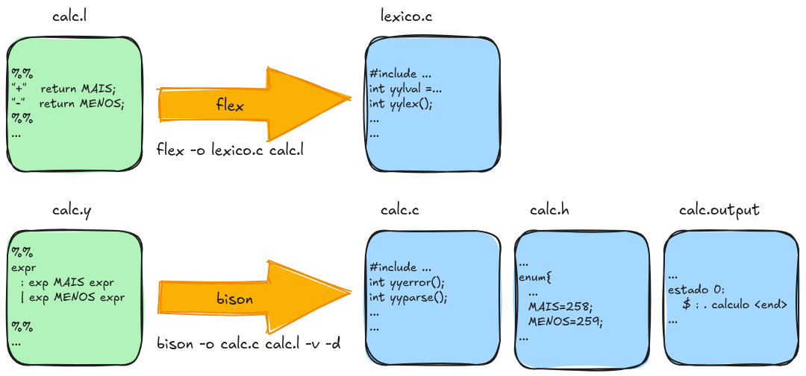
A figura apresenta, de forma esquemática, a integração entre o analisador léxico e o analisador sintático na utilização conjunta de Flex e Bison. O fluxo pode ser explicado a partir dos arquivos de especificação, dos arquivos gerados pelas ferramentas e da comunicação estabelecida entre os componentes.
O processo começa com o arquivo calc.l, que contém a especificação do analisador léxico. Nele são definidas as expressões regulares responsáveis por reconhecer os diferentes elementos da linguagem. No exemplo, as regras reconhecem os operadores + e - e retornam, respectivamente, os tokens MAIS e MENOS. O arquivo também pode conter regras para números, identificadores, espaços em branco e outros elementos léxicos.
A partir de calc.l, o Flex gera o arquivo lexico.c. Esse arquivo contém a implementação do analisador léxico, incluindo a função yylex(), responsável por percorrer a entrada e identificar os tokens. A geração pode ser realizada, por exemplo, pelo comando:
flex -o lexico.c calc.lAssim, o arquivo escrito pelo programador (calc.l) constitui a especificação do analisador, enquanto lexico.c corresponde ao código-fonte C produzido automaticamente pelo Flex.
De maneira semelhante, o arquivo calc.y contém a especificação do analisador sintático. Nesse arquivo são declarados os tokens utilizados pela gramática e definidas as produções que descrevem a estrutura sintática das expressões. No exemplo representado na figura, a gramática contém produções para expressões envolvendo os tokens MAIS e MENOS. As regras podem ainda ser acompanhadas de ações semânticas, responsáveis por realizar algum processamento quando uma produção é reduzida.
O Bison recebe calc.y e gera o arquivo calc.c, que implementa o analisador sintático. Internamente, o Bison constrói as estruturas necessárias para realizar a análise ascendente, incluindo os estados do autômato e a tabela de análise sintática. A opção -v pode ser utilizada para solicitar a geração de um arquivo contendo informações detalhadas sobre os estados e as ações do analisador, enquanto a opção -d solicita a geração de um arquivo de cabeçalho com as definições dos tokens.
O arquivo calc.h desempenha um papel importante na integração entre o analisador léxico e o analisador sintático. Ele contém as definições dos tokens gerados pelo Bison. Na figura, por exemplo, aparecem códigos como MAIS = 258 e MENOS = 259. Dessa forma, tanto o código gerado pelo Flex quanto o código gerado pelo Bison utilizam a mesma representação numérica para os tokens.
A comunicação entre os dois analisadores ocorre principalmente por meio da função yylex(). Quando o analisador sintático necessita de um novo token, ele solicita esse token ao analisador léxico. O yylex() examina a entrada, reconhece o próximo lexema e retorna o código correspondente ao token. Por exemplo, ao encontrar o caractere +, o analisador léxico pode retornar MAIS; ao encontrar -, pode retornar MENOS.
Além do código do token, o analisador léxico pode fornecer um valor semântico associado ao token. Esse mecanismo é utilizado, por exemplo, quando um número inteiro é reconhecido. Nesse caso, o texto identificado pelo Flex pode ser convertido para um valor numérico e armazenado em yylval, permitindo que o analisador sintático e suas ações semânticas tenham acesso ao valor reconhecido.
A figura também mostra o arquivo calc.output, produzido quando o Bison é executado com a opção -v. Esse arquivo é particularmente útil para compreender o funcionamento interno do analisador. Ele apresenta informações sobre os estados do autômato LR, os itens que compõem cada estado e as ações de deslocamento e redução associadas aos símbolos da gramática. O trecho apresentado na figura, por exemplo, mostra o estado inicial contendo um item semelhante a:
estado 0:
$ : . calculo <end>O ponto indica a posição corrente durante a construção do item LR. Nesse caso, o analisador encontra-se no estado inicial e ainda não reconheceu nenhum símbolo da produção.
Finalmente, o arquivo calc.c, juntamente com o código gerado pelo Flex e os demais arquivos necessários, pode ser compilado para produzir o programa executável. O resultado é um analisador sintático capaz de receber uma sequência de caracteres, solicitar tokens ao analisador léxico e verificar se essa sequência pode ser reconhecida pela gramática especificada em calc.y.
Arquivo de especificação para Bison
Um arquivo de entrada do Yacc é tradicionalmente dividido em três partes:
%{
/* definições e declarações em C */
%}
/* declarações de tokens */
%%
/* regras gramaticais e ações semânticas */
%%
/* subrotinas do usuário */A primeira seção contém declarações necessárias ao analisador e código C que deve ser incorporado ao programa gerado. Nessa seção também podem ser declarados os tokens utilizados pela gramática.
A segunda seção contém as regras de produção da gramática. Cada produção pode ser acompanhada por uma ação semântica, escrita entre chaves, que será executada quando a produção correspondente for reduzida.
A terceira seção contém as funções auxiliares e demais rotinas escritas pelo programador.
Essa organização permite separar a especificação da gramática da implementação das rotinas auxiliares, tornando o desenvolvimento do analisador mais sistemático.
Integração entre Lex/Flex e Yacc/Bison
A construção de um analisador sintático com Yacc normalmente envolve sua integração com um analisador léxico, tradicionalmente implementado com Lex ou, atualmente, com ferramentas compatíveis como Flex.
O analisador léxico é responsável por ler os caracteres da entrada e agrupá-los em tokens. O analisador sintático, por sua vez, recebe esses tokens e verifica se a sequência obtida está de acordo com a gramática.
Por exemplo, podemos declarar um token para representar números inteiros:
%token MAIS
%token NUMEROA partir dessa declaração, o Yacc identifica NUMERO como um dos terminais utilizados pela gramática. Durante a geração do analisador, são produzidas as estruturas necessárias para que o analisador léxico e o analisador sintático utilizem uma representação comum dos tokens.
O arquivo gerado contém, entre outras informações, os códigos numéricos associados aos tokens. O analisador léxico pode então incluir o arquivo de cabeçalho produzido pelo Yacc/Bison para ter acesso às definições desses tokens.
A comunicação entre o analisador léxico e o sintático ocorre, tradicionalmente, por meio da função yylex(). Quando o analisador sintático necessita de um novo token, ele chama essa função. O analisador léxico identifica o próximo elemento da entrada e retorna o código correspondente ao token.
Além do código do token, o analisador léxico pode fornecer um valor associado ao token por meio da variável yylval. Esse mecanismo é particularmente importante para tokens que carregam informações adicionais, como números, identificadores e literais.
Por exemplo, ao reconhecer um número inteiro, o analisador léxico pode executar:
[0-9]+ {
yylval = atoi(yytext);
return NUMERO;
}Nesse caso, yytext contém o texto reconhecido pelo analisador léxico. A função atoi() converte esse texto para um valor inteiro, que é armazenado em yylval. Em seguida, a função retorna o token NUMERO para o analisador sintático.
O tipo de yylval é determinado pela definição de YYSTYPE. Em exemplos simples, pode ser utilizado o tipo int. Em compiladores mais complexos, entretanto, diferentes tokens podem transportar diferentes tipos de informação, como valores numéricos, nomes de identificadores ou estruturas de dados.
Pilhas utilizadas pelo analisador sintático
Durante a análise, o Yacc mantém informações que representam o estado corrente do processo de reconhecimento. Didaticamente, podemos considerar duas estruturas principais: a pilha de análise e a pilha de valores.
A pilha de análise representa a estrutura sintática que está sendo construída. Nela são mantidas informações relacionadas aos símbolos e aos estados do analisador. A pilha de valores, por sua vez, mantém os valores semânticos associados aos símbolos.
As duas estruturas permanecem sincronizadas. Quando um token é deslocado para a pilha durante uma operação shift, seu valor correspondente também é armazenado na estrutura de valores.
Durante uma redução, os símbolos correspondentes ao lado direito da produção são removidos e substituídos pelo não terminal do lado esquerdo. Simultaneamente, a ação semântica associada à produção pode calcular o valor que será associado ao novo símbolo.
Considere a produção:
expr:
expr MAIS expr { $$ = $1 + $3; }Os símbolos $1, $2 e $3 representam os valores associados aos símbolos que aparecem no lado direito da produção. Nesse caso:
$1representa o valor da primeira ocorrência deexpr;$2representa o valor associado ao tokenMAIS;$3representa o valor da segunda ocorrência deexpr;$$representa o valor associado ao não terminalexprapós a redução.
Assim, a ação:
{ $$ = $1 + $3; }calcula o valor da expressão resultante e o associa ao símbolo expr produzido pela redução.
Quando a produção é:
expr:
NUMERO { $$ = $1; }o valor do token NUMERO é simplesmente transferido para o não terminal expr. Essa ação permite que o valor numérico reconhecido pelo analisador léxico seja propagado pela árvore sintática durante as reduções.
Esse mecanismo estabelece uma ligação direta entre a análise sintática e a análise semântica. Enquanto as produções determinam a estrutura sintática da linguagem, as ações semânticas permitem associar informações e operações a essa estrutura.
Exemplo de uma calculadora simples
Os padrões léxicos utilizados nas expressões aritméticas é especificada da seguinte forma para flex (arquivo calc.l):
%{
#include "calc.h"
void yyerror(char *);
%}
%%
[0-9]+ {
yylval = atoi(yytext);
return NUMERO;
}
"+" return MAIS;
"-" return MENOS;
"*" return VEZES;
"/" return DIV;
"(" return ABRE;
")" return FECHA;
[ \t]+ ;
\n return ENTER;
. {
char msg[100];
sprintf(msg, "[%s] desconhecido!", yytext);
yyerror(msg);
}
%%
int yywrap () {
return 1;
}Uma gramática elementar para uma calculadora que realiza operações de adição, subtração, multiplicação, divisão e expressões entre parênteses pode ser especificada como (arquivo calc.y):
%{
#include <stdio.h>
#include <stdlib.h>
int yylex(void);
void yyerror(char *);
%}
%token ENTER
%token MAIS
%token MENOS
%token VEZES
%token DIV
%token NUMERO
%token ABRE
%token FECHA
%start linha
%left MAIS MENOS
%left VEZES DIV
%%
calculo: calculo expr ENTER { printf ("resultado = %d\n", $2); }
|
;
expr : expr MAIS expr { $$ = $1 + $3; }
| expr MENOS expr { $$ = $1 - $3; }
| expr VEZES expr { $$ = $1 * $3; }
| expr DIV expr { $$ = $1 / $3; }
| ABRE expr FECHA { $$ = $2; }
| NUMERO { $$ = $1; }
;
%%
void yyerror (char *msg) {
printf("Erro: %s\n", msg);
}
int main() {
yyparse();
return 0;
}A produção calculo permite reconhecer uma sequência de expressões, cada uma terminada por uma quebra de linha. Quando uma expressão é reconhecida, seu valor é apresentado na saída.
A produção:
expr: expr MAIS exprdefine uma expressão como a soma de duas outras expressões. Quando essa produção é reduzida, a ação semântica calcula a soma dos valores associados às duas subexpressões.
De maneira análoga:
expr: expr MENOS exprcalcula a diferença entre os valores das duas expressões.
O uso de ações semânticas dessa forma permite que o analisador não apenas reconheça se uma sequência pertence à linguagem definida pela gramática, mas também execute operações associadas à estrutura sintática reconhecida.
Esse processo está ilustrado na árvore de derivação apresentada na Figura 5.11. As ações semânticas associadas às produções podem ser entendidas como operações executadas durante o processo de análise sintática, à medida que o analisador percorre a árvore de derivação. Quando uma ação semântica é alcançada, ela é executada e os valores associados aos símbolos da árvore são calculados ou atualizados. Dessa forma, as informações semânticas são propagadas pela árvore, permitindo que o valor de uma construção sintática seja determinado a partir dos valores de seus componentes.
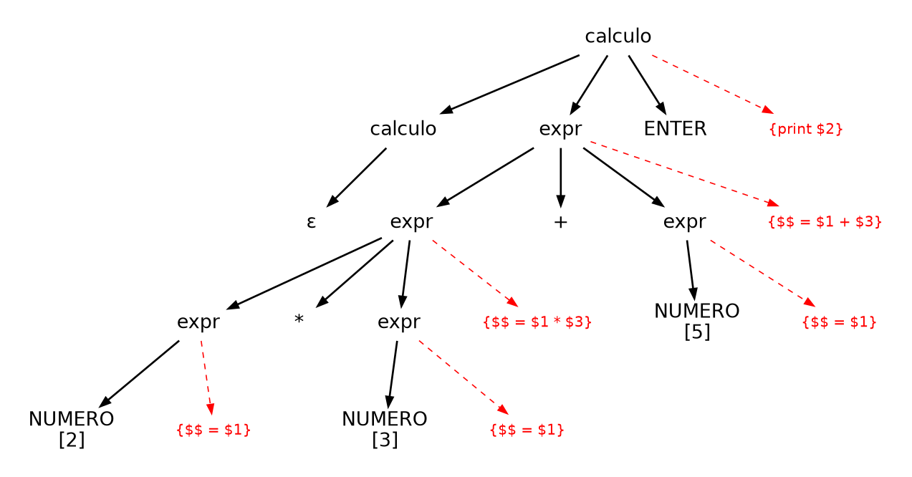
2 * 3 + 5
Esse princípio é fundamental para a construção de compiladores. Durante a análise sintática, as reduções podem ser utilizadas para construir árvores sintáticas, verificar informações semânticas, gerar representações intermediárias ou executar ações específicas associadas às construções da linguagem.
Para geração da calculadora devemos executar a seguinte sequência de comandos:
flex -o lexico.c calc.l
bison -o calc.c calc.y -v -d;
gcc lexico.c calc.c -o calc;Tratamento de erros sintáticos
Quando o analisador sintático encontra uma sequência de tokens que não pode ser derivada pela gramática, ocorre um erro sintático. O Yacc/Bison disponibiliza mecanismos para tratar esses erros, tradicionalmente por meio da função yyerror().
Uma implementação simples pode ser:
void yyerror(char *s)
{
printf("%s\n", s);
}Essa função recebe uma mensagem associada ao erro detectado pelo analisador sintático e pode ser modificada para produzir mensagens mais informativas, incluindo, por exemplo, a linha e a coluna em que o erro ocorreu, o token encontrado e os tokens esperados.
O tratamento de erros é uma característica importante de analisadores sintáticos utilizados em compiladores reais. Um compilador não deve apenas detectar que uma entrada é inválida, mas também fornecer informações que auxiliem o programador a localizar e corrigir o problema.
Uso da calculadora de expressões
Com o executável gerado calc podemos realizar alguns cálculos:
$ ./calc
12 + 4
resultado = 16
2 * (3 + 4)
resultado = 14
2 + 3 + 4
resultado = 9
^C
$ 5.5 Projeto de Compilador - Parte 2
Na Parte 1, foi implementada uma versão do analisador léxico responsável por percorrer o programa fonte e identificar os tokens presentes na entrada. Para algumas classes de tokens, como T_NUMERO e T_IDENTIF, o analisador léxico também armazena, na variável global atomo, o lexema correspondente ao token reconhecido. Dessa forma, além de identificar a classe léxica do elemento encontrado, o analisador mantém a informação necessária para que esse lexema possa ser utilizada nas etapas posteriores do processo de compilação.
Nesta segunda etapa, o analisador léxico será integrado ao analisador sintático, que será gerado automaticamente a partir da especificação da gramática utilizando a ferramenta Bison. O objetivo é avançar da identificação isolada dos tokens para o reconhecimento da estrutura sintática dos programas escritos na linguagem definida para o projeto.
A linguagem utilizada para a construção do compilador é uma versão didática denominada linguagem Simples. Essa linguagem foi especialmente concebida para facilitar o desenvolvimento e a compreensão de uma primeira versão de um compilador. Por esse motivo, sua estrutura é deliberadamente reduzida, contendo apenas os elementos necessários para explorar as principais etapas da construção de um compilador, desde a análise léxica e sintática até as etapas posteriores.
A linguagem Simples possui apenas os tipos de dados lógico e inteiro. As declarações de variáveis seguem uma sintaxe inspirada em linguagens da família C, enquanto os comandos disponíveis incluem operações de entrada e saída, atribuição, seleção e repetição. Entre os comandos definidos pela linguagem estão leia VARIAVEL, para leitura de valores; escreva expressão, para saída de resultados; atribuições utilizando o operador <-; além das estruturas condicionais se ... entao ... senao ... fimse e de repetição enquanto ... faca ... fimenquanto.
Um programa simples escrito nessa linguagem pode ser representado pelo seguinte exemplo:
programa teste
inteiro A B C
inicio
leia A
leia B
se A > B
entao C <- A
A <- B
B <- C
senao
fimse
enquanto A < B faca
escreva A
A <- A + 1
fimenquanto
fimprogramaO exemplo apresenta algumas das principais construções disponíveis na linguagem. Inicialmente, o programa é identificado pelo comando programa, seguido de seu nome. Em seguida, são declaradas as variáveis inteiras A, B e C. O bloco iniciado pela palavra-chave inicio contém os comandos que serão executados pelo programa.
As instruções leia A e leia B representam operações de entrada de dados. Na sequência, a estrutura condicional verifica se o valor de A é maior que o valor de B. Caso a condição seja verdadeira, são realizadas três atribuições que utilizam a variável auxiliar C para trocar os valores de A e B. O comando senao representa o ramo alternativo da estrutura condicional, ainda que, neste exemplo, ele não contenha comandos.
Posteriormente, o programa apresenta uma estrutura de repetição definida pelos comandos enquanto ... faca e fimenquanto. Enquanto a condição A < B for verdadeira, o valor de A é apresentado por meio do comando escreva e, em seguida, incrementado por meio da atribuição A <- A + 1. Finalmente, o comando fimprograma delimita o término do programa.
Uma característica importante da linguagem Simples é a ausência deliberada de alguns elementos de pontuação encontrados normalmente nas linguagens de programação, como os símbolos ; e ,. Essa decisão tem como objetivo tornar a linguagem mais simples para os primeiros experimentos com a construção de compiladores, reduzindo a quantidade de elementos sintáticos que precisam ser tratados pelo analisador léxico e pelo analisador sintático.
Entretanto, essa simplificação também introduz desafios na definição da gramática. Na ausência de delimitadores explícitos entre determinadas construções, o analisador sintático pode encontrar situações nas quais diferentes interpretações da sequência de tokens são possíveis ou nas quais não é possível determinar claramente onde termina uma construção e começa outra. Como será discutido nas próximas etapas do desenvolvimento do compilador, essas características da linguagem Simples terão impacto direto na construção da gramática e poderão resultar em conflitos durante a geração do analisador sintático pelo Bison.
Assim, nesta etapa do projeto, o foco passa da identificação individual dos tokens para a análise da sequência de tokens como uma estrutura sintática. O analisador léxico desenvolvido na etapa anterior fornecerá os tokens ao Bison por meio da função yylex(), enquanto o analisador sintático gerado pelo Bison utilizará esses tokens para verificar se o programa está de acordo com a gramática da linguagem Simples.
Gramática da linguagem simples
Usando a notação apresentada neste livro, a gramática da linguagem Simples é:
Estrutura do programa e declarações
\[ \begin{aligned} programa &\rightarrow cabecalho \quad variaveis \\ &\quad T\_INICIO \quad lista\_comandos \quad T\_FIM \\ cabecalho &\rightarrow T\_PROGRAMA \quad T\_IDENTIF \\ variaveis &\rightarrow \lambda \\ &\mid declaracao\_variaveis \\[3pt] declaracao\_variaveis &\rightarrow tipo \quad lista\_variaveis \quad declaracao\_variaveis \\ &\mid tipo \quad lista\_variaveis \\ tipo &\rightarrow T\_LOGICO \\ &\mid T\_INTEIRO \\ lista\_variaveis &\rightarrow T\_IDENTIF \quad lista\_variaveis \\ &\mid T\_IDENTIF \end{aligned} \]
Lista de comandos e comandos
\[ \begin{aligned} lista\_comandos &\rightarrow comando \quad lista\_comandos \\ &\mid \lambda \\[3pt] comando &\rightarrow entrada\_saida \\ &\mid repeticao \\ &\mid selecao \\ &\mid atribuicao \\[3pt] entrada\_saida &\rightarrow leitura \\ &\mid escrita \\[3pt] leitura &\rightarrow T\_LEIA \quad T\_IDENTIF \\[3pt] escrita &\rightarrow T\_ESCREVA \quad expressao \end{aligned} \]
Estruturas de controle (repetição, seleção) e atribuição
\[ \begin{aligned} repeticao &\rightarrow T\_ENQTO \quad expressao \quad T\_FACA \\ &\quad lista\_comandos \quad T\_FIMENQTO \\[-1pt] selecao &\rightarrow T\_SE \quad expressao \quad T\_ENTAO \\ &\quad lista\_comandos \\ &\quad T\_SENAO \quad lista\_comandos \quad T\_FIMSE \\[-1pt] atribuicao &\rightarrow T\_IDENTIF \quad T\_ATRIB \quad expressao \end{aligned} \]
Expressões
\[ \begin{aligned} expressao &\rightarrow expressao \quad T\_VEZES \quad expressao \\ &\mid expressao \quad T\_DIV \quad expressao \\ &\mid expressao \quad T\_MAIS \quad expressao \\ &\mid expressao \quad T\_MENOS \quad expressao \\ &\mid expressao \quad T\_MAIOR \quad expressao \\ &\mid expressao \quad T\_MENOR \quad expressao \\ &\mid expressao \quad T\_IGUAL \quad expressao \\ &\mid expressao \quad T\_E \quad expressao \\ &\mid expressao \quad T\_OU \quad expressao \\ &\mid termo \\[3pt] termo &\rightarrow T\_IDENTIF \\ &\mid T\_NUMERO \\ &\mid T\_V \\ &\mid T\_F \\ &\mid T\_NAO \quad termo \\ &\mid T\_ABRE \quad expressao \quad T\_FECHA \end{aligned} \]
Os símbolos não terminais (variáveis da gramática) estão grafados com letras minúsculas e são: programa, cabecalho, variaveis, declaracao_variaveis, tipo, lista_variaveis, lista_comandos, comando, entrada_saida, leitura, escrita, repeticao, condicao, atribuicao, expressao e termo. O símbolo de partida é o não-terminal programa.
Os símbolos terminais (alfabeto da gramática) estão representados pelas constantes com o prefixo T_como: T_PROGRAMA, T_INICIO, T_FIM, T_IDENTIF, T_INTEIRO, T_LOGICO, T_LEIA, T_ESCREVA, T_ENQTO, T_FACA, T_FIMENQTO, T_SE, T_ENTAO, T_SENAO, T_FIMSE, T_ATRIB, T_VEZES, T_DIV, T_MAIS, T_MENOS, T_MAIOR, T_MENOR, T_IGUAL, T_E, T_OU, T_V, T_F, T_NAO, T_ABRE e T_FECHA. Essas constantes representam codificações numéricas dos símbolos que são reconhecidos e retornados pelo analisador léxico.
Para bison, os tokens são definidoss como na listagem seguinte:
%token T_PROGRAMA
%token T_INICIO
%token T_FIM
%token T_IDENTIF
%token T_LEIA
%token T_ESCREVA
%token T_ENQTO
...Os códigos utilizados aqui são os mesmos retornados pelo analisador léxico. Basta incluir o arquivo de cabeçalho que é gerado com a declaração dessas contantes pela ferramenta bison.
Como pode ser observado, a gramatica de expressões usada na linguagem Simples é ambígua. Essa ambiguidade é resolvida definindo-se prioridade entre as operações para a ferramenta Yacc. Fazemos isso com a seguinte declaração:
%left T_E T_OU
%left T_IGUAL
%left T_MAIOR T_MENOR
%left T_MAIS T_MENOS
%left T_VEZES T_DIVCom essa declaração, definimos que a multiplicação e a divisão tem associatividade mais à esquerda e precedência sobre a soma e a subtração. Soma e subtração tem precedência sobre Operadores relacionais Maior, Menor e Igual. Os operadores relacionais tem precedência sobre os operadores lógicos E e OU.
Algumas das regras de produção da gramática SIMPLES, usando a notação de bison, ficam assim:
programa
: cabecalho
variaveis
T_INICIO lista_comandos T_FIM
;
cabecalho
: T_PROGRAMA T_IDENTIF
;
variaveis
: /* vazio */
| declaracao_variaveis
;
(...)
lista_comandos
: /* vazio */
| comando lista_comandos
;
comando
: leitura
| escrita
| repeticao
| selecao
| atribuicao
;
(...)
repeticao
: T_ENQTO expressao T_FACA
lista_comandos T_FIMENQTO
;
(...)
expressao
: expressao T_VEZES expressao
| expressao T_DIV expressao
| expressao T_MAIS expressao
| expressao T_MENOS expressao
| expressao T_MAIOR expressao
| expressao T_MENOR expressao
| expressao T_IGUAL expressao
| expressao T_E expressao
| expressao T_OU expressao
| termo
;
termo
: T_IDENTIF
| T_NUMERO
| T_V
| T_F
| T_NAO termo
| T_ABRE expressao T_FECHA
; Codigos fontes
O arquivo lexico.l define o analisador léxico, responsável por ler a sequência de caracteres do programa-fonte, reconhecer os lexemas e convertê-los nos tokens utilizados pelo analisador sintático. Na seção inicial (%{ ... %}), é incluído o arquivo sintatico.h, que contém as definições dos tokens gerados pelo Bison, além da declaração da função erro_lexico(). As expressões regulares identificador, numero, espaco e novalinha definem padrões para identificadores, números, espaços em branco e quebras de linha. Entre os delimitadores %% são especificadas as regras léxicas: palavras reservadas, operadores, símbolos lógicos e demais elementos da linguagem são reconhecidos e associados aos respectivos tokens, como T_PROG, T_INICIO e T_NUMERO; espaços e quebras de linha são simplesmente ignorados, enquanto identificadores e números são reconhecidos por meio das expressões regulares previamente definidas. Qualquer caractere que não corresponda a uma dessas regras é tratado como erro léxico pela função erro_lexico(), que informa o símbolo desconhecido e encerra a execução. Por fim, a função yywrap() informa ao Flex que não há mais arquivos de entrada a serem processados.
Código do analisador léxico, adaptado para funcionar integrado com o sintático:
%{
#include "sintatico.h"
void erro_lexico(char *);
%}
identificador [a-zA-Z]([a-zA-Z]|[0-9])*
numero [0-9]+
espaco [ \t]+
novalinha [\n]
%%
programa { return T_PROG; }
inicio { return T_INICIO; }
fimprograma { return T_FIM; }
leia { return T_LEIA; }
escreva { return T_ESCREVA; }
se { return T_SE; }
entao { return T_ENTAO; }
senao { return T_SENAO; }
fimse { return T_FIMSE; }
enquanto { return T_ENQTO; }
faca { return T_FACA; }
fimenquanto { return T_FIMENQTO; }
inteiro { return T_INTEIRO; }
logico { return T_LOGICO; }
V { return T_V; }
F { return T_F; }
"+" { return T_MAIS; }
"-" { return T_MENOS; }
"*" { return T_VEZES; }
div { return T_DIV; }
">" { return T_MAIOR; }
"<" { return T_MENOR; }
"=" { return T_IGUAL; }
E { return T_E; }
OU { return T_OU; }
NAO { return T_NAO; }
"<-" { return T_ATRIB; }
{identificador} { return T_IDENTIF; }
{numero} { return T_NUMERO; }
{espaco} { }
{novalinha} { }
. { erro_lexico (yytext); }
%%
void erro_lexico(char *s) {
fprintf(stderr, "Erro Léxico.\n");
fprintf(stderr, " símbolo %s desconhecido\n\n", s);
exit(10);
}
int yywrap() {
return 1;
}O arquivo sintatico.y define o analisador sintático da linguagem, utilizando o Bison para verificar se a sequência de tokens produzida pelo analisador léxico está de acordo com a gramática da linguagem. Na seção inicial (%{ ... %}), são incluídas as bibliotecas necessárias e declaradas as funções de comunicação com o analisador léxico, como yylex(), yyerror() e o arquivo de entrada yyin. As declarações %token definem os tokens reconhecidos pelo analisador léxico e utilizados na gramática. A diretiva %define parse.error custom permite personalizar as mensagens de erro sintático. Entre os delimitadores %% é definida a gramática da linguagem, formada pelas regras para estrutura do programa, cabeçalho, declaração de variáveis, tipos, comandos de leitura e escrita, estruturas de repetição e seleção, atribuições e expressões. Após a gramática, a função yyerror() trata mensagens gerais de erro do Bison, enquanto a função nome_token() associa cada símbolo interno do Bison a uma descrição em português, permitindo produzir mensagens mais compreensíveis. A função yyreport_syntax_error() utiliza essas descrições para informar o símbolo encontrado e os símbolos esperados quando ocorre um erro sintático. Por fim, a função main() verifica o nome do arquivo fornecido como argumento, abre o programa-fonte e inicia a análise sintática por meio de yyparse(), encerrando o processamento após o fechamento do arquivo.
Código do analisador sintático:
%{
#include <stdio.h>
#include <stdlib.h>
#include <string.h>
int yylex();
void yyerror(const char *);
extern FILE *yyin;
%}
%token T_PROG
%token T_INICIO
%token T_FIM
%token T_IDENTIF
%token T_LEIA
%token T_ESCREVA
%token T_ENQTO
%token T_FACA
%token T_FIMENQTO
%token T_SE
%token T_ENTAO
%token T_SENAO
%token T_FIMSE
%token T_ATRIB
%token T_VEZES
%token T_DIV
%token T_MAIS
%token T_MENOS
%token T_MAIOR
%token T_MENOR
%token T_IGUAL
%token T_E
%token T_OU
%token T_V
%token T_F
%token T_NUMERO
%token T_NAO
%token T_ABRE
%token T_FECHA
%token T_LOGICO
%token T_INTEIRO
%define parse.error custom
%left T_E T_OU
%left T_IGUAL
%left T_MAIOR T_MENOR
%left T_MAIS T_MENOS
%left T_VEZES T_DIV
%%
programa
: cabecalho
variaveis
T_INICIO lista_comandos T_FIM
;
cabecalho
: T_PROG T_IDENTIF
;
variaveis
: /* vazio */
| declaracao_variaveis
;
declaracao_variaveis
: tipo lista_variaveis declaracao_variaveis
| tipo lista_variaveis
;
tipo
: T_LOGICO
| T_INTEIRO
;
lista_variaveis
: lista_variaveis T_IDENTIF
| T_IDENTIF
;
lista_comandos
: /* vazio */
| comando lista_comandos
;
comando
: leitura
| escrita
| repeticao
| selecao
| atribuicao
;
leitura
: T_LEIA T_IDENTIF
;
escrita
: T_ESCREVA expressao
;
repeticao
: T_ENQTO expressao T_FACA
lista_comandos T_FIMENQTO
;
selecao
: T_SE expressao T_ENTAO
lista_comandos T_SENAO
lista_comandos T_FIMSE
;
atribuicao
: T_IDENTIF T_ATRIB expressao
;
expressao
: expressao T_VEZES expressao
| expressao T_DIV expressao
| expressao T_MAIS expressao
| expressao T_MENOS expressao
| expressao T_MAIOR expressao
| expressao T_MENOR expressao
| expressao T_IGUAL expressao
| expressao T_E expressao
| expressao T_OU expressao
| termo
;
termo
: T_IDENTIF
| T_NUMERO
| T_V
| T_F
| T_NAO termo
| T_ABRE expressao T_FECHA
;
%%
void yyerror(const char *mensagem)
{
fprintf(stderr, "Erro Interno: %s\n", mensagem);
}
static const char *nome_token(yysymbol_kind_t token)
{
static const char *nomes[] = {
[YYSYMBOL_T_PROG] = "programa",
[YYSYMBOL_T_INICIO] = "início",
[YYSYMBOL_T_FIM] = "fim",
[YYSYMBOL_T_IDENTIF] = "identificador",
[YYSYMBOL_T_LEIA] = "leia",
[YYSYMBOL_T_ESCREVA] = "escreva",
[YYSYMBOL_T_ENQTO] = "enquanto",
[YYSYMBOL_T_FACA] = "faça",
[YYSYMBOL_T_FIMENQTO] = "fim-enquanto",
[YYSYMBOL_T_SE] = "se",
[YYSYMBOL_T_ENTAO] = "então",
[YYSYMBOL_T_SENAO] = "senão",
[YYSYMBOL_T_FIMSE] = "fim-se",
[YYSYMBOL_T_ATRIB] = "atribuição",
[YYSYMBOL_T_VEZES] = "'*'",
[YYSYMBOL_T_DIV] = "'/'",
[YYSYMBOL_T_MAIS] = "'+'",
[YYSYMBOL_T_MENOS] = "'-'",
[YYSYMBOL_T_MAIOR] = "'>'",
[YYSYMBOL_T_MENOR] = "'<'",
[YYSYMBOL_T_IGUAL] = "'='",
[YYSYMBOL_T_E] = "e",
[YYSYMBOL_T_OU] = "ou",
[YYSYMBOL_T_V] = "verdadeiro",
[YYSYMBOL_T_F] = "falso",
[YYSYMBOL_T_NUMERO] = "número",
[YYSYMBOL_T_NAO] = "não",
[YYSYMBOL_T_ABRE] = "'('",
[YYSYMBOL_T_FECHA] = "')'",
[YYSYMBOL_T_LOGICO] = "lógico",
[YYSYMBOL_T_INTEIRO] = "inteiro"
};
if (token >= 0 &&
token < sizeof(nomes) / sizeof(nomes[0]) &&
nomes[token] != NULL)
return nomes[token];
return "símbolo desconhecido";
}
static int yyreport_syntax_error(const yypcontext_t *ctx)
{
yysymbol_kind_t token;
yysymbol_kind_t expected[10];
token = yypcontext_token(ctx);
fprintf(stderr, "Erro de sintaxe.\n");
fprintf(stderr, " Símbolo encontrado: %s\n",
nome_token(token));
fprintf(stderr, " Símbolos esperados: ");
int n = yypcontext_expected_tokens(ctx, expected, 10);
for (int i = 0; i < n; i++) {
if (i > 0)
fprintf(stderr, ", ");
fprintf(stderr, "%s", nome_token(expected[i]));
}
fprintf(stderr, "\n\n");
return 0;
}
int main(int argc, char *argv[]) {
if (argc < 2) {
printf("Uso:\n \t%s <nomeprog.simples>\n\n", argv[0]);
exit(20);
}
yyin = fopen(argv[1], "rt");
yyparse();
fclose(yyin);
}O arquivo makefile automatiza o processo de geração e compilação do compilador da linguagem Simples, evitando a necessidade de executar manualmente cada comando. O alvo simples estabelece como dependências os arquivos lexico.l e sintatico.y e executa, inicialmente, o Flex para transformar as regras léxicas de lexico.l no código-fonte C lexico.c. Em seguida, o Bison processa sintatico.y, gerando o analisador sintático sintatico.c, o arquivo de cabeçalho sintatico.h, que contém as definições dos tokens utilizados pelo analisador léxico, e o arquivo sintatico.output, que apresenta informações sobre a gramática e as tabelas do analisador gerado. Por fim, o compilador gcc combina lexico.c e sintatico.c e gera o executável simples. O alvo limpa remove os arquivos gerados durante o processo de compilação, permitindo realizar uma nova geração dos arquivos a partir dos fontes originais.
Código do makefile para automatizar a construção do compilador:
simples: lexico.l sintatico.y ;\
flex -o lexico.c lexico.l
bison -o sintatico.c sintatico.y -v -d
gcc lexico.c sintatico.c -o simples
limpa: ;\
rm simples lexico.c sintatico.c sintatico.h sintatico.output simplesSimulador do Analisador Sintático para Linguagem Simples
O exemplo interativo a seguir, demonstra o processo de construção da árvore sintática para um programa. Para o programa fonte digitado, após clicar no botão ‘Construir Árvore’, são gerados e calculados os tokens e os nós da árvore sintática. As folhas da árvore estão relacionadas as informações do código.